Each hvtiPlotR plot function returns a bare ggplot object with no colour scales, axis labels, or theme applied. The caller composes those with the usual + operator. See the companion vignette “Decorating and Saving hvtiPlotR Plots” for full coverage of scale_, labs(), annotate(), themes, and ggsave() patterns.
Template Reference Map
The table below maps each hvtiPlotR function to the original SAS and R templates it ports. Functions marked with — have no direct predecessor and were designed specifically for this package. All functions have worked examples in the sections below.
| hvtiPlotR Function | SAS Template(s) | R Template(s) |
|---|---|---|
mirror_histogram() |
— |
tp.lp.mirror-histogram_SAVR-TF-TAVR.R, tp.lp.mirror_histo_before_after_wt.R
|
stacked_histogram() |
— | — |
covariate_balance() |
— | tp.lp.propen.cov_balance.R |
goodness_followup() |
tp.dp.goodness_followup.* |
— |
goodness_event_plot() |
tp.dp.goodness_event.* |
— |
survival_curve() |
tp.hp.dead.sas (basic) |
tp.hp.dead.number_risk.R |
hazard_plot() |
tp.hp.dead.*, tp.hp.event.weighted.sas, tp.hp.repeated*.sas, tp.hp.numtreat.survdiff.matched.sas, tp.hs.dead.*, tp.hs.uslife_*
|
tp.hp.dead.number_risk.R |
survival_difference_plot() |
tp.hp.dead.life-gained.sas, tp.hp.numtreat.survdiff.matched.sas, tp.hs.dead.compare_benefit.setup.sas
|
— |
nnt_plot() |
tp.hp.numtreat.survdiff.matched.sas |
— |
nonparametric_curve_plot() |
tp.np.*.avrg_curv.*, tp.np.*.u.trend.*, tp.np.*.double.*, tp.np.*.mult.*, tp.np.*.phases.*, tp.np.z0axdpo.*
|
— |
nonparametric_ordinal_plot() |
tp.np.*.ordinal.* |
— |
eda_plot() |
— | — |
spaghetti_plot() |
— | tp.dp.spaghetti.echo.R |
trends_plot() |
tp.lp.trends.sas, tp.lp.trends.age.sas, tp.lp.trends.polytomous.sas, tp.rp.trends.sas
|
tp.dp.trends.R |
longitudinal_counts_plot() |
tp.dp.longitudinal_patients_measures.* |
— |
longitudinal_counts_table() |
tp.dp.longitudinal_patients_measures.* |
— |
alluvial_plot() |
— | — |
cluster_sankey_plot() |
— | PAM cluster stability analysis |
upset_plot() |
— | — |
Mirrored Propensity Score Histogram
A common figure in propensity-matched analyses is the mirrored histogram, which displays the propensity score distributions for two treatment groups before and after matching. The hvtiPlotR package provides the mirror_histogram() function to generate this figure.
The function accepts a data frame with columns for the propensity score, group indicator, and match indicator. The sample_mirror_histogram_data() function generates example data suitable for testing.
The function supports two display modes selected by the arguments supplied:
-
Binary-match mode (
match_col): upper bars show all observations before matching; overlaid bars show the matched subset. This reproducestp.lp.mirror-histogram_SAVR-TF-TAVR.R. -
Weighted IPTW mode (
weight_col): upper bars show raw counts; overlaid bars show per-bin IPTW weight sums. This reproducestp.lp.mirror_histo_before_after_wt.R.
Binary-match mode (SAVR vs. TF-TAVR)
mirror_dta <- sample_mirror_histogram_data(n = 2000, separation = 1.5)
mhist <- mirror_histogram(
data = mirror_dta,
score_col = "prob_t",
group_col = "tavr",
match_col = "match",
group_levels = c(0, 1),
group_labels = c("SAVR", "TF-TAVR"),
matched_value = 1,
score_multiplier = 100,
binwidth = 5,
alpha = 0.8
)
mhist +
ggplot2::scale_fill_manual(
values = c(
before_g0 = "white", matched_g0 = "green1",
before_g1 = "white", matched_g1 = "green4"
),
guide = "none"
) +
ggplot2::scale_x_continuous(
limits = c(0, 100),
breaks = seq(0, 100, 10)
) +
ggplot2::annotate("text", x = 20, y = 100, label = "SAVR", size = 7) +
ggplot2::annotate("text", x = 20, y = -100, label = "TF-TAVR", size = 7) +
ggplot2::labs(x = "Propensity Score (%)", y = "Number of Patients") +
hvti_theme("manuscript")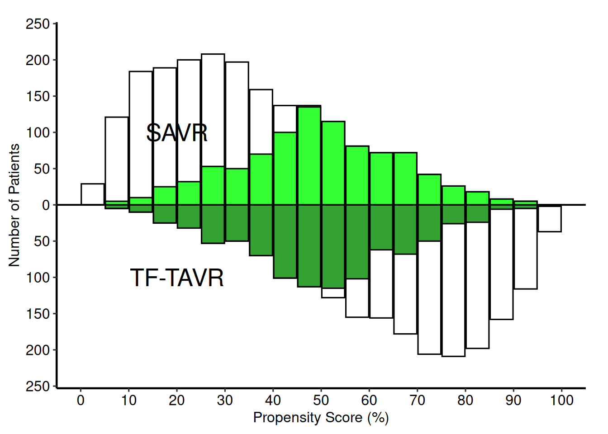
The lighter bars show the full (pre-match) distribution for each group; the darker overlaid bars show the matched subset. Upper panel = first group label; lower panel = second group label.
The function returns diagnostics with group counts and standardized mean differences (SMD) before and after matching:
Weighted IPTW mode (Limited vs. Extended)
wt_dta <- sample_mirror_histogram_data(
n = 2000, separation = 1.5, add_weights = TRUE
)
mhist_wt <- mirror_histogram(
data = wt_dta,
score_col = "prob_t",
group_col = "tavr",
group_levels = c(0, 1),
group_labels = c("Limited", "Extended"),
weight_col = "mt_wt",
score_multiplier = 100,
binwidth = 5,
alpha = 0.8
)
mhist_wt +
ggplot2::scale_fill_manual(
values = c(
before_g0 = "white", weighted_g0 = "blue",
before_g1 = "white", weighted_g1 = "red"
),
guide = "none"
) +
ggplot2::scale_x_continuous(
limits = c(0, 100),
breaks = seq(0, 100, 10)
) +
ggplot2::annotate("text", x = 30, y = 150, label = "Limited", color = "blue", size = 5) +
ggplot2::annotate("text", x = 30, y = -70, label = "Extended", color = "red", size = 5) +
ggplot2::labs(x = "Propensity Score (%)", y = "#") +
hvti_theme("manuscript")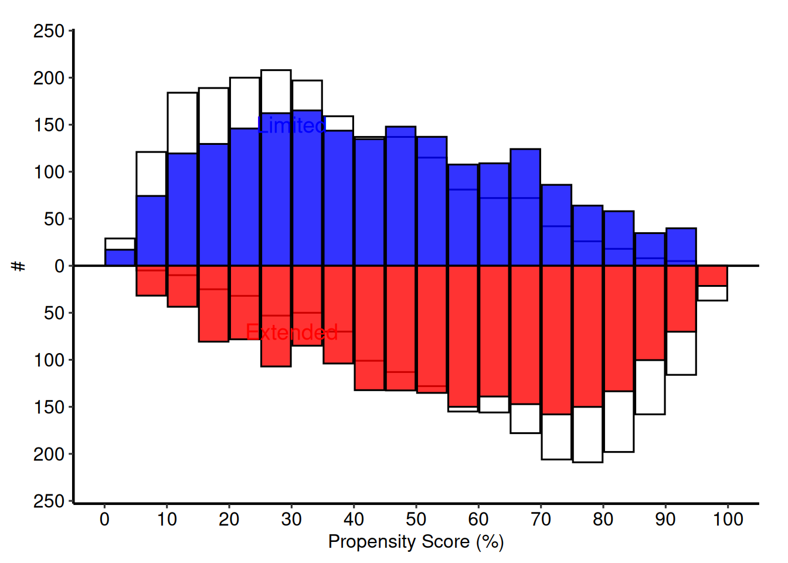
Weighted diagnostics include the effective N and weighted SMD:
Stacked Histogram
A common exploratory figure is the stacked histogram, which shows how the composition of a numeric variable changes over time or across another grouping dimension. The hvtiPlotR package provides the stacked_histogram() function to generate this figure.
The function returns a bare ggplot object — no colour scales, axis labels, or theme are applied — so the caller can add those freely with the usual + operator.
The sample_stacked_histogram_data() function generates a reproducible example dataset with year and category columns.
# Generate sample data
hist_dta <- sample_stacked_histogram_data(n_years = 20, start_year = 2000,
n_categories = 3)
head(hist_dta) year category
1 2000 1
2 2000 1
3 2000 2
4 2000 2
5 2000 2
6 2000 1Count histogram
The default position = "stack" shows raw counts within each bin, equivalent to the plot.sas frequency histogram.
# Build the bare plot
p_count <- stacked_histogram(hist_dta, x_col = "year", group_col = "category")
# Layer on colour scales, labels, and a theme
p_count +
scale_fill_brewer(palette = "Set1", name = "Category") +
scale_color_brewer(palette = "Set1", name = "Category") +
labs(x = "Year", y = "Count") +
hvti_theme("manuscript")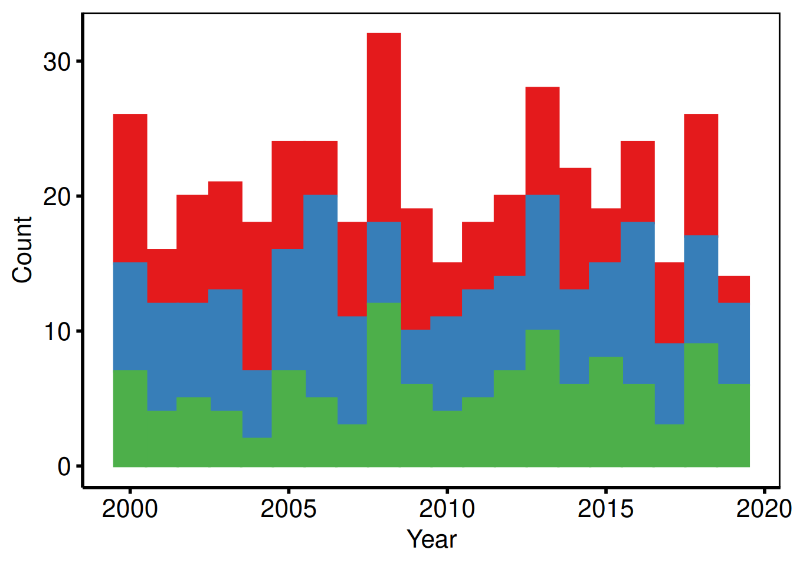
Proportion (fill) histogram
Setting position = "fill" rescales each bin so the bars sum to 1, making it easy to compare the relative composition across years.
# Build the proportional variant
p_fill <- stacked_histogram(hist_dta, x_col = "year", group_col = "category",
position = "fill")
# Use manual colours and custom legend labels
p_fill +
scale_fill_manual(
values = c("1" = "pink", "2" = "cyan", "3" = "orangered"),
labels = c("1" = "Group A", "2" = "Group B", "3" = "Group C"),
name = "Category"
) +
scale_color_manual(
values = c("1" = "pink", "2" = "cyan", "3" = "orangered"),
guide = "none"
) +
labs(x = "Year", y = "Proportion") +
hvti_theme("manuscript")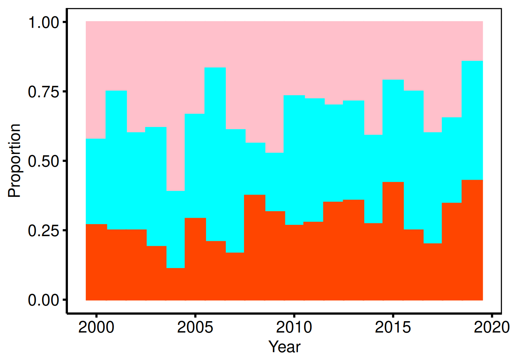
Saving
p_final <- p_fill +
scale_fill_manual(
values = c("1" = "pink", "2" = "cyan", "3" = "orangered"),
name = "Category"
) +
scale_color_manual(
values = c("1" = "pink", "2" = "cyan", "3" = "orangered"),
guide = "none"
) +
labs(x = "Year", y = "Proportion") +
hvti_theme("manuscript")
ggsave(
filename = "../graphs/stacked_histogram.pdf",
plot = p_final,
width = 11,
height = 8
)Goodness-of-Follow-Up Plot
The goodness-of-follow-up plot is a standard quality-control figure in longitudinal outcome analyses. It displays each patient as a point at their operation date (x-axis) and follow-up duration (y-axis), with a short vertical tick below each point. A dashed diagonal line marks the maximum potential follow-up given the study start, study end, and follow-up closing date. The hvtiPlotR package provides goodness_followup() to build this figure.
The function returns a bare ggplot object with no colour, shape, axis, or label scales applied — those are added by the caller with standard ggplot2 modifiers.
Sample data
gfup_dta <- sample_goodness_followup_data(n = 300, seed = 42)
head(gfup_dta) iv_opyrs iv_dead dead iv_event ev_event deads
1 29.5694 2.0261 FALSE 2.0261 FALSE FALSE
2 6.4834 6.9027 TRUE 4.0813 TRUE TRUE
3 14.4342 5.4468 TRUE 5.4468 FALSE TRUE
4 25.4324 6.1630 FALSE 0.6137 TRUE FALSE
5 3.4251 13.1369 TRUE 6.9232 TRUE TRUE
6 24.1620 7.4334 FALSE 7.4334 FALSE FALSEDeath follow-up plot
gfup <- goodness_followup(
data = gfup_dta,
origin_year = 1990,
study_start = as.Date("1990-01-01"),
study_end = as.Date("2019-12-31"),
close_date = as.Date("2021-08-06"),
alpha = 0.8
)
# Bare plot — no scales or labels yet
gfup$death_plotNULLAdding scales, labels, and annotations
Scale, label, and annotation layers are composed with the usual + operator. scale_color_manual() and scale_shape_manual() map the binary alive/dead state to colours and point shapes. annotate() places group-identifying text directly on the panel.
library(RColorBrewer)
gfup$death_plot +
# Colour alive = blue, dead = red (Set1 palette positions 2 and 1)
scale_color_manual(
values = brewer.pal(3, "Set1")[c(2, 1)],
labels = c("Alive", "Dead"),
na.value = "black",
drop = FALSE
) +
scale_shape_manual(
values = c(1, 4),
labels = c("Alive", "Dead")
) +
# Axis tick placement
scale_x_continuous(breaks = seq(1990, 2020, 3)) +
scale_y_continuous(breaks = seq(0, 33, 3)) +
# Clip the panel to the study window
coord_cartesian(ylim = c(0, 33), xlim = c(1990, 2020)) +
# Axis and legend labels
labs(
x = "Operation Date",
y = "Follow-up (years)",
color = "Status",
shape = "Status"
) +
# Annotate directly on the panel
annotate("text", x = 1993, y = 31, label = "Alive at close",
hjust = 0, size = 3.5) +
annotate("text", x = 1993, y = 28, label = "Deceased",
hjust = 0, size = 3.5, color = brewer.pal(3, "Set1")[1]) +
theme(legend.position = "none")NULLThe diagonal dashed line represents the maximum potential follow-up. Points sitting above the line indicate patients with longer follow-up than expected from the study window, typically due to passive surveillance supplementing active cross-sectional follow-up.
Saving
gfup_final <- gfup$death_plot +
scale_color_manual(
values = brewer.pal(3, "Set1")[c(2, 1)],
labels = c("Alive", "Dead"),
na.value = "black",
drop = FALSE
) +
scale_shape_manual(values = c(1, 4), labels = c("Alive", "Dead")) +
scale_x_continuous(breaks = seq(1990, 2020, 3)) +
scale_y_continuous(breaks = seq(0, 33, 3)) +
coord_cartesian(ylim = c(0, 33), xlim = c(1990, 2020)) +
labs(x = "Operation Date", y = "Follow-up (years)",
color = "Status", shape = "Status") +
annotate("text", x = 1993, y = 31, label = "Alive at close",
hjust = 0, size = 3.5) +
annotate("text", x = 1993, y = 28, label = "Deceased",
hjust = 0, size = 3.5, color = brewer.pal(3, "Set1")[1]) +
theme(legend.position = "none") +
hvti_theme("manuscript")
ggsave(
filename = "../graphs/dp_goodness-of-followup.pdf",
plot = gfup_final,
height = 6,
width = 6
)Non-fatal event panel
When the dataset includes a non-fatal competing event (e.g. relapse, reoperation), pass event_col, event_time_col, and optionally death_for_event_col to generate a second panel alongside the death panel.
gfup_event_dta <- sample_goodness_followup_data(n = 300, seed = 42)
goodness_event_plot(
gfup_event_dta,
event_col = "ev_event",
event_time_col = "iv_event",
death_for_event_col = "deads",
event_levels = c("No event", "Relapse", "Death"),
origin_year = 1990,
study_start = as.Date("1990-01-01"),
study_end = as.Date("2019-12-31"),
close_date = as.Date("2021-08-06"),
alpha = 0.8
) +
scale_color_manual(
values = c("No event" = "blue", "Relapse" = "green3", "Death" = "red"),
name = NULL
) +
scale_shape_manual(
values = c("No event" = 1L, "Relapse" = 2L, "Death" = 4L),
name = NULL
) +
scale_x_continuous(breaks = seq(1990, 2020, 3)) +
scale_y_continuous(breaks = seq(0, 33, 3)) +
coord_cartesian(ylim = c(0, 33), xlim = c(1990, 2020)) +
labs(
x = "Operation Date",
y = "Follow-up (years)",
color = "Event", shape = "Event"
) +
annotate("text", x = 1993, y = 31,
label = "Systematic follow-up", hjust = 0, size = 3.5) +
theme(legend.position = c(0.85, 0.15)) +
hvti_theme("manuscript")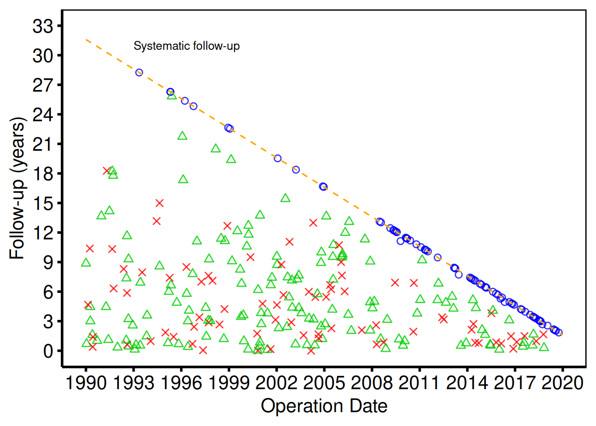
The death panel (from goodness_followup()) and event panel (from goodness_event_plot()) share the same diagonal reference line and can be saved individually with ggsave().
Covariate Balance Plot
The covariate balance plot is the standard quality-control figure for propensity score matching and IPTW analyses. Each covariate occupies a labelled row; points show the standardized mean difference (SMD) for each comparison group (e.g. before and after matching). A solid vertical line marks zero balance; dotted vertical lines mark an imbalance threshold (default ±10%).
The hvtiPlotR package provides covariate_balance() to build this figure, superseding tp.lp.propen.cov_balance.R. It returns a bare ggplot object — no colour, shape, axis labels, or theme applied — so all styling is added with the usual + operator.
Input data must be in long format: one row per covariate × group combination with columns for the covariate name, the group label, and the numeric SMD value. When the source dataset arrives in wide format (one column per time-point, as the SAS export does), reshape it first:
# Simulate a wide-format export (e.g. from SAS or a summary table)
dta_wide <- data.frame(
variable = c("Age", "Female sex", "Hypertension", "Diabetes", "COPD"),
`Before match` = c(22.1, -15.3, 18.7, -9.4, 11.2),
`After match` = c( 3.5, 2.1, -1.8, 4.0, -2.3),
check.names = FALSE
)
dta_long <- reshape(
dta_wide,
direction = "long",
varying = c("Before match", "After match"),
v.names = "std_diff",
timevar = "group",
times = c("Before match", "After match"),
idvar = "variable"
)
head(dta_long) variable group std_diff
Age.Before match Age Before match 22.1
Female sex.Before match Female sex Before match -15.3
Hypertension.Before match Hypertension Before match 18.7
Diabetes.Before match Diabetes Before match -9.4
COPD.Before match COPD Before match 11.2
Age.After match Age After match 3.5Sample data
dta_cb <- sample_covariate_balance_data(n_vars = 12)
head(dta_cb) variable group std_diff
1 Age Before match 9.8
2 Female sex Before match 25.4
3 Hypertension Before match -14.7
4 Diabetes mellitus Before match -8.9
5 COPD Before match -3.9
6 Creatinine Before match 26.5Bare plot
covariate_balance(dta_cb, alpha = 0.8)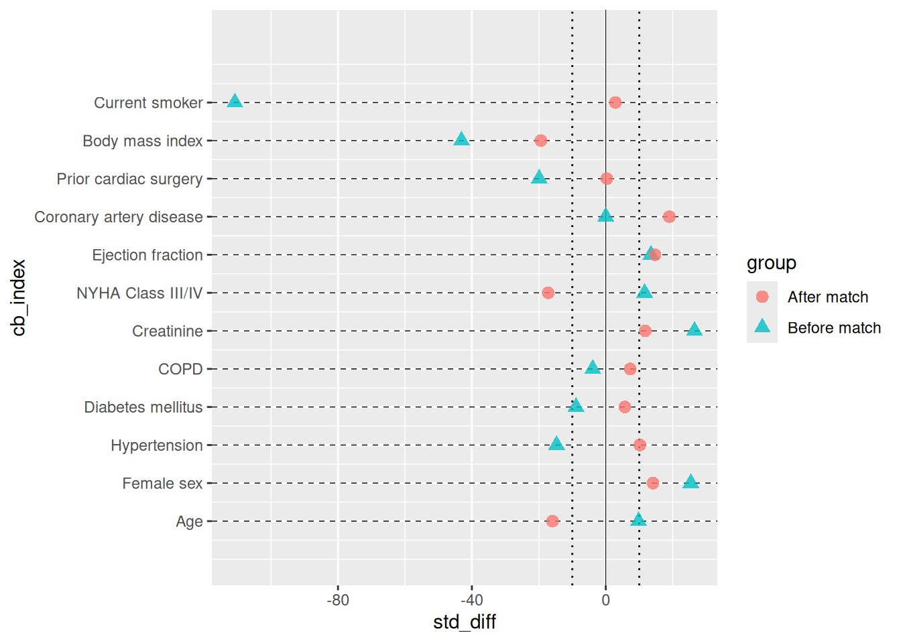
Adding colour, shape, and axis scales
covariate_balance(dta_cb, alpha = 0.8) +
scale_color_manual(
values = c("Before match" = "red4", "After match" = "blue3"),
name = NULL
) +
scale_shape_manual(
values = c("Before match" = 17L, "After match" = 15L),
name = NULL
) +
scale_x_continuous(
limits = c(-45, 35),
breaks = seq(-40, 30, 10)
) +
labs(
x = "Standardized difference (%)",
y = ""
) +
theme(legend.position = c(0.20, 0.95))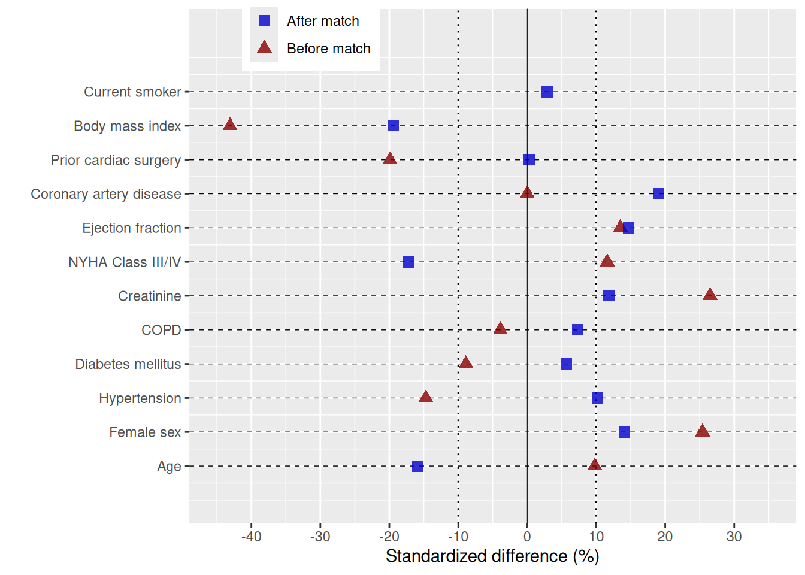
Adding directional annotations and theme
annotate() places explanatory text directly on the panel to indicate which direction of imbalance favours each group. The example below uses the exact labels, x-scale, annotation positions, and legend placement from tp.lp.propen.cov_balance.R (SAVR vs. TF-TAVR study).
n_vars <- length(unique(dta_cb$variable))
covariate_balance(dta_cb, alpha = 0.8) +
scale_color_manual(
values = c("Before match" = "red4", "After match" = "blue3"),
name = NULL
) +
scale_shape_manual(
values = c("Before match" = 17L, "After match" = 15L),
name = NULL
) +
scale_x_continuous(
limits = c(-40, 30),
breaks = seq(-40, 30, 10)
) +
labs(x = "Standardized difference: SAVR - TF:TAVR (%)", y = "") +
annotate("text", x = -30, y = 0, label = "More likely TF-TAVR", size = 4.5) +
annotate("text", x = 22, y = n_vars, label = "More likely SAVR", size = 4.5) +
theme(legend.position = c(0.20, 0.935)) +
hvti_theme("manuscript")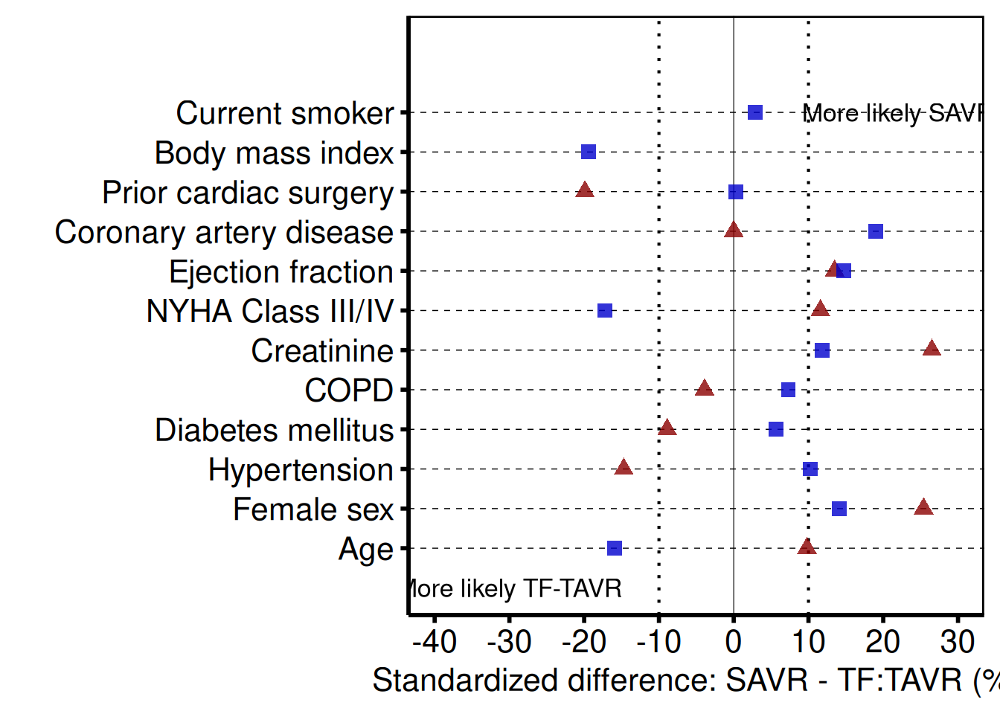
Controlling covariate order
Pass var_levels to control the bottom-to-top display order of covariates.
covariate_balance(
dta_cb,
var_levels = rev(unique(dta_cb$variable)),
alpha = 0.8
) +
scale_color_manual(
values = c("Before match" = "red4", "After match" = "blue3"),
name = NULL
) +
scale_shape_manual(
values = c("Before match" = 17L, "After match" = 15L),
name = NULL
) +
labs(x = "Standardized difference (%)", y = "") +
hvti_theme("manuscript")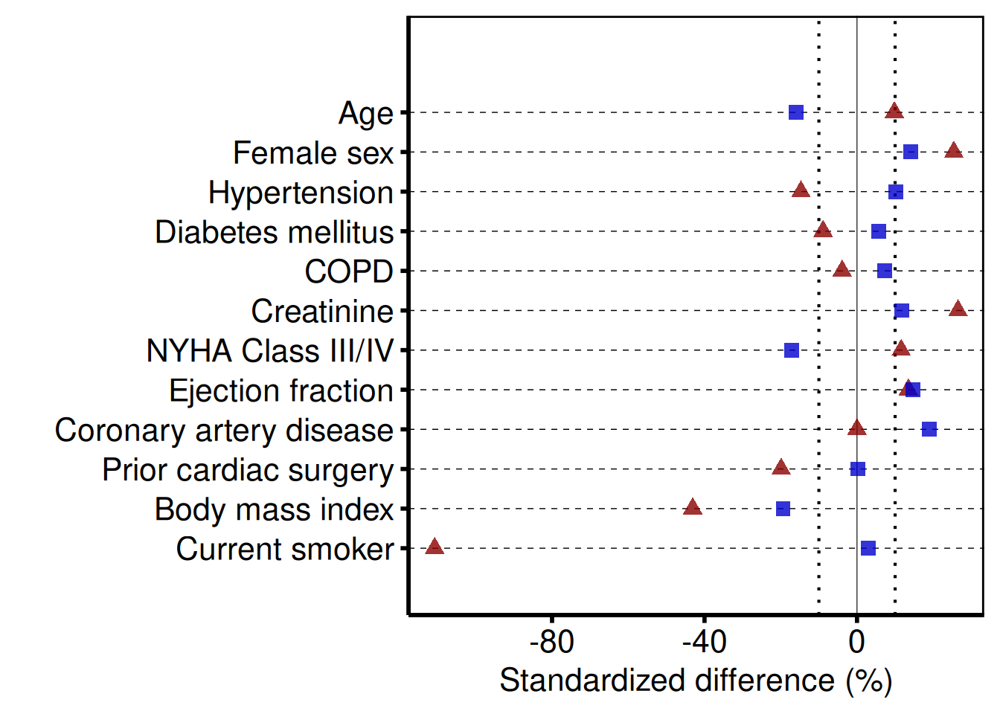
Saving
n_vars <- length(unique(dta_cb$variable))
cb_final <- covariate_balance(dta_cb, alpha = 0.8) +
scale_color_manual(
values = c("Before match" = "red4", "After match" = "blue3"),
name = NULL
) +
scale_shape_manual(
values = c("Before match" = 17L, "After match" = 15L),
name = NULL
) +
scale_x_continuous(limits = c(-40, 30), breaks = seq(-40, 30, 10)) +
labs(x = "Standardized difference: SAVR - TF:TAVR (%)", y = "") +
annotate("text", x = -30, y = 0, label = "More likely TF-TAVR", size = 4.5) +
annotate("text", x = 22, y = n_vars, label = "More likely SAVR", size = 4.5) +
theme(legend.position = c(0.20, 0.935)) +
hvti_theme("manuscript")
ggsave(
filename = here::here("graphs", "lp_cov-balance-SAVR_TF-TAVR.pdf"),
plot = cb_final,
height = 7,
width = 8
)Kaplan-Meier Survival Curve
survival_curve() estimates the Kaplan-Meier product-limit survival function and returns a bare ggplot for the selected plot_type (default "survival"). All five companion plots matching the SAS %kaplan macro output (PLOTS, PLOTC, PLOTH, PLOTL), plus tidy data frames for tables and further computation, are attached as attributes (accessible via attr(result, "km_data") etc.). Confidence intervals use the logit transform with a default confidence level of 0.95.
Sample data
dta_km <- sample_survival_data(n = 500, seed = 42)
head(dta_km) iv_dead dead iv_opyrs age_at_op
1 3.966736 TRUE 2003.503 58.08251
2 13.217905 TRUE 2008.716 65.37466
3 5.669821 TRUE 1990.072 58.80676
4 0.763838 TRUE 2005.739 66.45205
5 9.463533 TRUE 2006.139 75.84440
6 20.000000 FALSE 1991.461 60.21944Survival curve (PLOTS=1)
km <- survival_curve(dta_km, alpha = 0.8)
# Bare plot — no scales or labels yet
km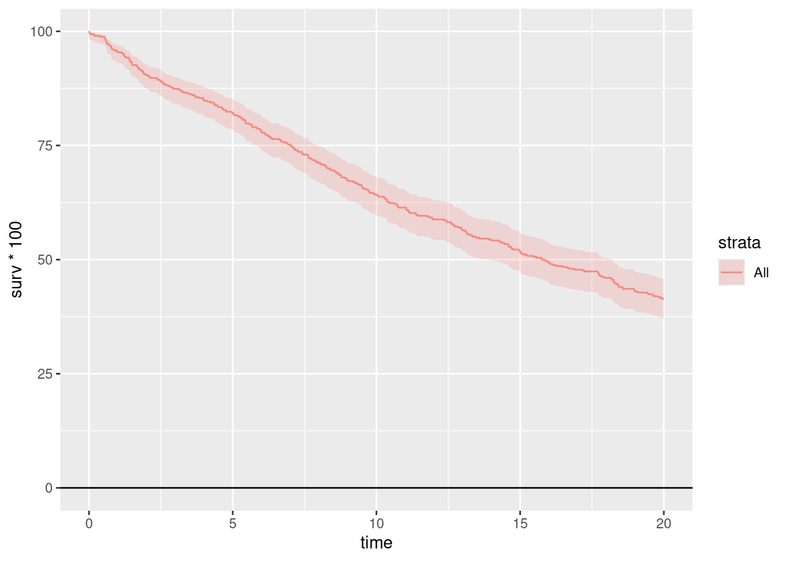
Adding scales, labels, and annotations
km +
scale_color_manual(values = c(All = "steelblue"), guide = "none") +
scale_fill_manual(values = c(All = "steelblue"), guide = "none") +
scale_y_continuous(
breaks = seq(0, 100, 20),
labels = function(x) paste0(x, "%")
) +
scale_x_continuous(breaks = seq(0, 20, 5)) +
coord_cartesian(xlim = c(0, 20), ylim = c(0, 100)) +
labs(
x = "Years after Operation",
y = "Freedom from Death (%)",
title = "Overall Survival"
) +
annotate("text", x = 1, y = 5,
label = paste0("n = ", nrow(dta_km)),
hjust = 0, size = 3.5) +
hvti_theme("manuscript")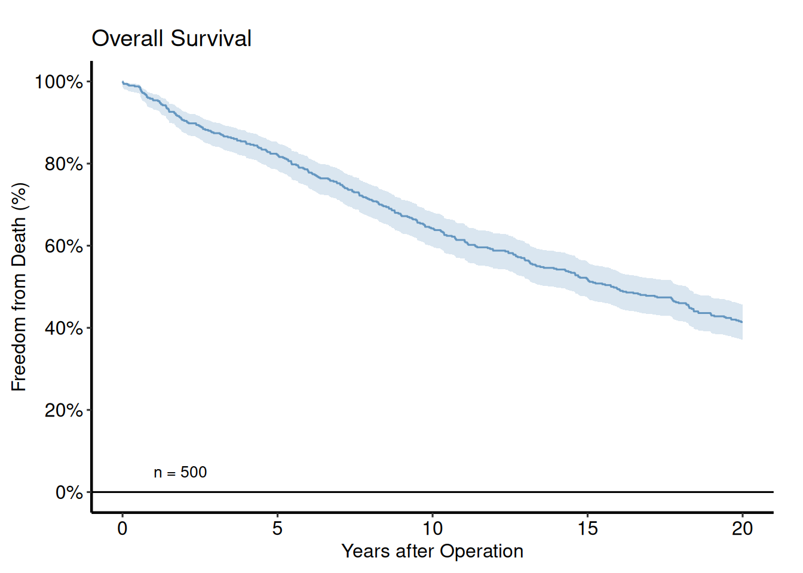
Numbers at risk and report table
attr(km, "risk_table") strata report_time n.risk
1 All 1 478
2 All 5 412
3 All 10 322
4 All 15 260
5 All 20 207
6 All 25 207
attr(km, "report_table") strata report_time surv lower upper n.risk n.event
1 All 1 0.954 0.9317320 0.9692443 478 1
2 All 5 0.822 0.7859710 0.8530976 412 1
3 All 10 0.642 0.5989814 0.6828473 322 1
4 All 15 0.518 0.4741762 0.5615486 260 1
5 All 20 0.414 0.3715880 0.4577269 207 0
6 All 25 0.414 0.3715880 0.4577269 207 0Saving
km_final <- km +
scale_color_manual(values = c(All = "steelblue"), guide = "none") +
scale_fill_manual(values = c(All = "steelblue"), guide = "none") +
scale_y_continuous(breaks = seq(0, 100, 20),
labels = function(x) paste0(x, "%")) +
scale_x_continuous(breaks = seq(0, 20, 5)) +
coord_cartesian(xlim = c(0, 20), ylim = c(0, 100)) +
labs(x = "Years after Operation", y = "Freedom from Death (%)") +
hvti_theme("manuscript")
ggsave("../graphs/km_survival.pdf", km_final, width = 8, height = 6)Stratified analysis
dta_km_s <- sample_survival_data(
n = 500,
strata_levels = c("Type A", "Type B"),
hazard_ratios = c(1, 1.4),
seed = 42
)
km_s <- survival_curve(dta_km_s, group_col = "valve_type", alpha = 0.8)
km_s +
scale_color_manual(
values = c("Type A" = "steelblue", "Type B" = "firebrick"),
name = "Valve Type"
) +
scale_fill_manual(
values = c("Type A" = "steelblue", "Type B" = "firebrick"),
name = "Valve Type"
) +
scale_y_continuous(breaks = seq(0, 100, 20),
labels = function(x) paste0(x, "%")) +
scale_x_continuous(breaks = seq(0, 20, 5)) +
coord_cartesian(xlim = c(0, 20), ylim = c(0, 100)) +
labs(x = "Years after Operation", y = "Freedom from Death (%)",
title = "Survival by Valve Type") +
theme(legend.position = c(0.15, 0.20)) +
hvti_theme("manuscript")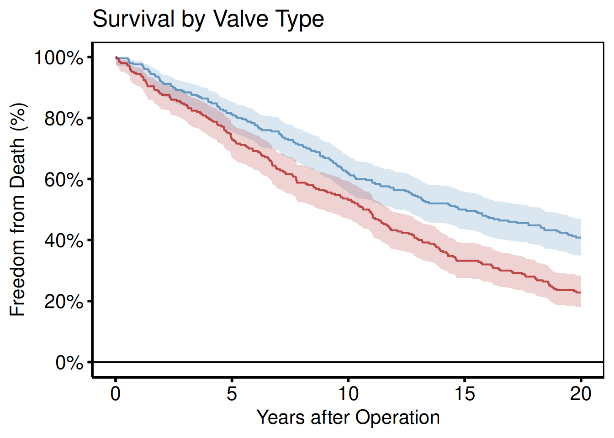
Cumulative hazard (PLOTC=1)
survival_curve(dta_km, plot_type = "cumhaz") +
scale_x_continuous(breaks = seq(0, 20, 5)) +
labs(x = "Years after Operation", y = "Cumulative Hazard H(t)",
title = "Nelson-Aalen Cumulative Hazard") +
scale_color_manual(values = c(All = "steelblue"), guide = "none") +
hvti_theme("manuscript")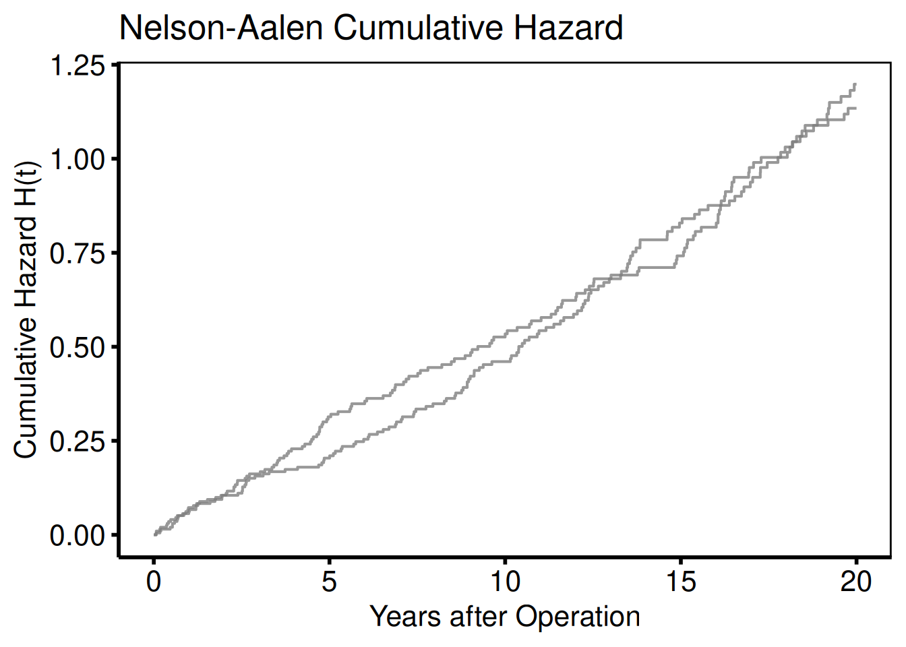
Log-log survival plot (Weibull/PH check)
Parallel lines across strata indicate proportional hazards.
survival_curve(dta_km_s, group_col = "valve_type", plot_type = "loglog") +
scale_color_manual(
values = c("Type A" = "steelblue", "Type B" = "firebrick"),
name = "Valve Type"
) +
labs(x = "log(Years after Operation)", y = "log(-log S(t))",
title = "Log-Log Survival — Proportional-Hazards Check") +
hvti_theme("manuscript")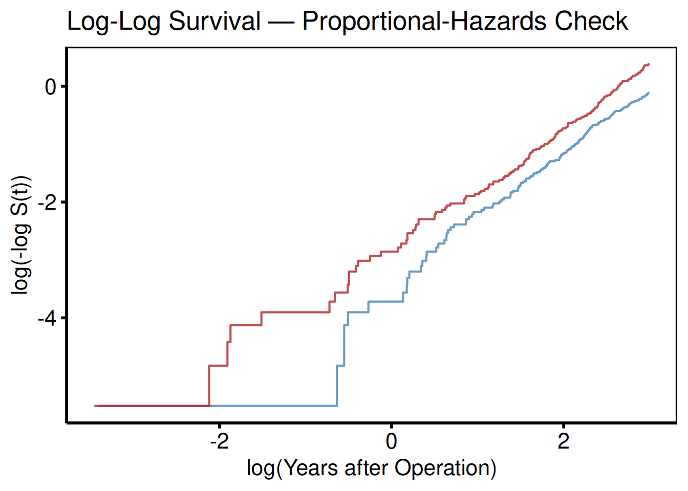
Hazard rate (PLOTH=1)
The raw point estimates are noisy; add geom_smooth() for a publication-ready smoothed hazard curve.
survival_curve(dta_km, plot_type = "hazard") +
geom_smooth(
aes(x = mid_time, y = hazard, color = strata),
method = "loess", se = FALSE, span = 0.6
) +
scale_color_manual(values = c(All = "steelblue"), guide = "none") +
scale_x_continuous(breaks = seq(0, 20, 5)) +
labs(x = "Years after Operation", y = "Instantaneous Hazard",
title = "Hazard Rate") +
hvti_theme("manuscript")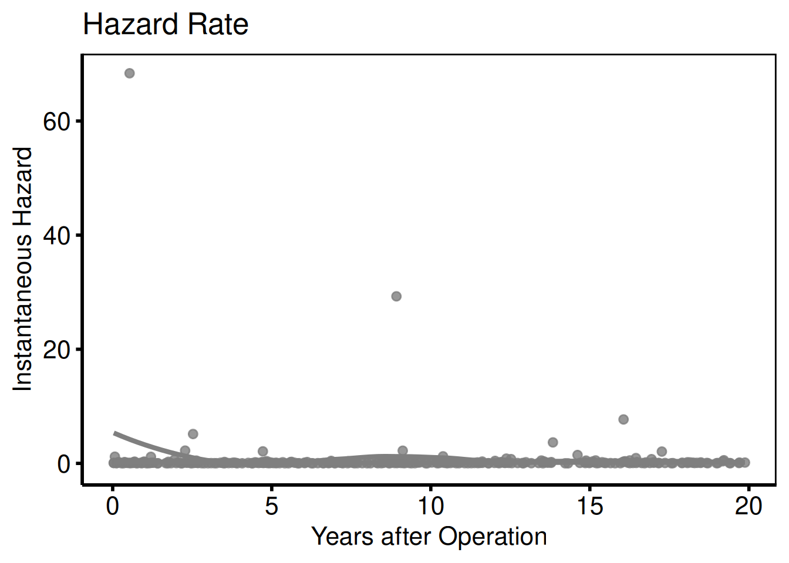
Integrated survivorship / restricted mean survival (PLOTL=1)
survival_curve(dta_km, plot_type = "life") +
scale_color_manual(values = c(All = "steelblue"), guide = "none") +
scale_x_continuous(breaks = seq(0, 20, 5)) +
labs(x = "Years after Operation",
y = "Restricted Mean Survival (years)",
title = "Integral of Survivorship") +
hvti_theme("manuscript")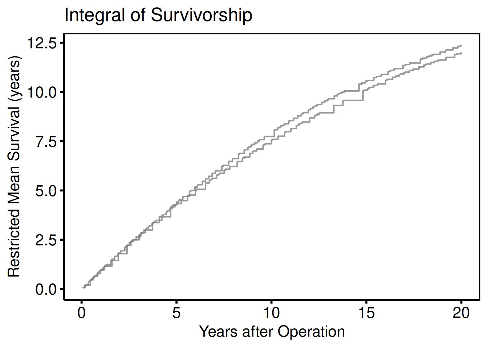
EDA Barplots and Scatterplots
The hvtiPlotR package provides eda_plot() for exploratory data analysis of all variables in a dataset against a reference time axis. It replicates the Function_DataPlotting() workflow from tp.dp.EDA_barplots_scatterplots.R and tp.dp.EDA_barplots_scatterplots_varnames.R, replacing base-R graphics with composable ggplot2 objects.
Three helper functions support the workflow:
-
eda_classify_var()— detects whether a column is continuous ("Cont"), numeric-categorical ("Cat_Num"), or character-categorical ("Cat_Char"), matching theUniqueLimitlogic from the template. -
eda_select_vars()— subsets and reorders columns by name or space-separated string, replacing theOrder_Variables()/Mod_Data <- dta[, Order_Var]pattern from the varnames template. -
sample_eda_data()— generates a reproducible mixed-type dataset for demonstration.
eda_plot() always returns a bare ggplot object. Colour scales, axis labels, annotations, and the hvti_theme() are added by the caller.
Sample data
dta_eda <- sample_eda_data(n = 300, seed = 42)
head(dta_eda) year op_years male cabg nyha valve_morph ef lv_mass peak_grad
1 2005 0.48 1 0 2 Tricuspid 66.3 97.6 31.0
2 2009 4.44 1 0 2 Unicuspid 52.0 121.1 38.0
3 2005 0.06 0 0 2 Tricuspid NA 129.7 25.2
4 2013 8.32 1 0 3 Bicuspid 49.8 131.4 52.5
5 2014 9.87 1 0 4 Tricuspid NA 146.3 NA
6 2008 3.92 1 1 1 Bicuspid 20.0 148.0 45.1
# Inspect auto-detected types for each column
sapply(dta_eda, eda_classify_var) year op_years male cabg nyha valve_morph
"Cont" "Cont" "Cat_Num" "Cat_Num" "Cat_Num" "Cat_Char"
ef lv_mass peak_grad
"Cont" "Cont" "Cont" Binary categorical: count barplot
Numeric 0/1 columns are classified as "Cat_Num". NA values appear as an explicit "(Missing)" fill level so they can be coloured with scale_fill_manual(). The y_label argument sets the plot title and fill-legend name in place of the raw column name.
eda_plot(dta_eda, x_col = "year", y_col = "male",
y_label = "Sex") +
scale_fill_manual(
values = c("0" = "steelblue", "1" = "firebrick", "(Missing)" = "grey80"),
labels = c("0" = "Female", "1" = "Male", "(Missing)" = "Missing"),
name = NULL
) +
scale_x_discrete(breaks = seq(2005, 2020, 5)) +
labs(x = "Surgery Year", y = "Count") +
hvti_theme("manuscript")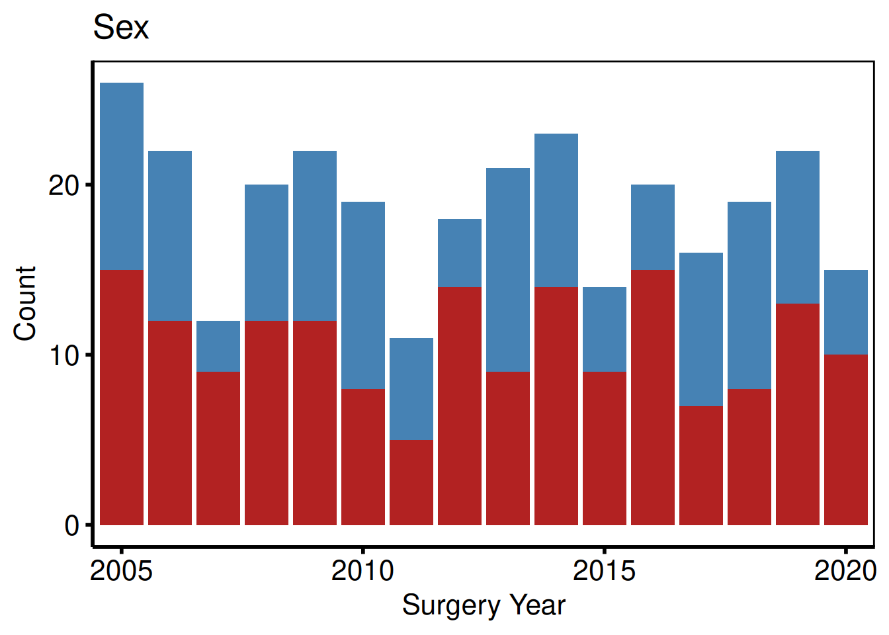
Binary categorical: percentage barplot
Setting show_percent = TRUE switches geom_bar() to position = "fill".
eda_plot(dta_eda, x_col = "year", y_col = "cabg",
y_label = "Concomitant CABG", show_percent = TRUE) +
scale_fill_manual(
values = c("0" = "grey70", "1" = "steelblue", "(Missing)" = "grey90"),
labels = c("0" = "No CABG", "1" = "CABG", "(Missing)" = "Missing"),
name = NULL
) +
scale_x_discrete(breaks = seq(2005, 2020, 5)) +
scale_y_continuous(labels = scales::percent) +
labs(x = "Surgery Year", y = "Proportion") +
hvti_theme("manuscript")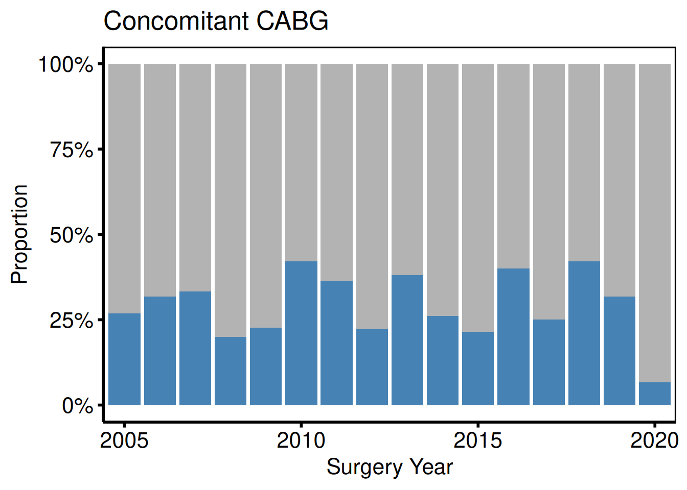
Ordinal and multi-level categorical
eda_plot(dta_eda, x_col = "year", y_col = "nyha",
y_label = "Preoperative NYHA Class") +
scale_fill_brewer(
palette = "RdYlGn", direction = -1,
labels = c("1" = "I", "2" = "II", "3" = "III", "4" = "IV",
"(Missing)" = "Missing"),
name = "NYHA"
) +
scale_x_discrete(breaks = seq(2005, 2020, 5)) +
labs(x = "Surgery Year", y = "Count") +
hvti_theme("manuscript")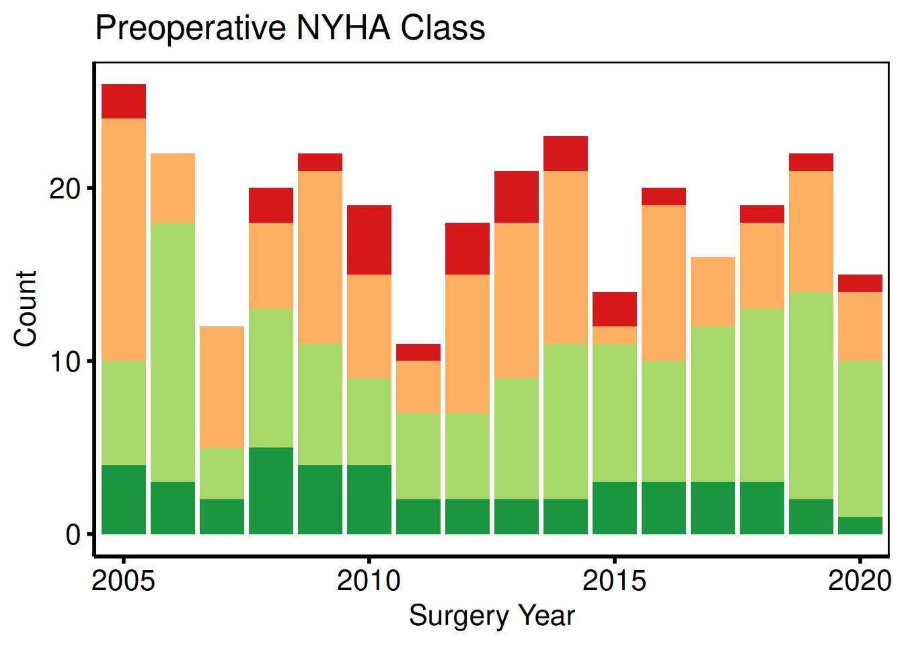
Character categorical
eda_plot(dta_eda, x_col = "year", y_col = "valve_morph",
y_label = "Valve Morphology") +
scale_fill_manual(
values = c(Bicuspid = "steelblue",
Tricuspid = "firebrick",
Unicuspid = "goldenrod3",
"(Missing)" = "grey80"),
name = "Morphology"
) +
scale_x_discrete(breaks = seq(2005, 2020, 5)) +
labs(x = "Surgery Year", y = "Count") +
hvti_theme("manuscript")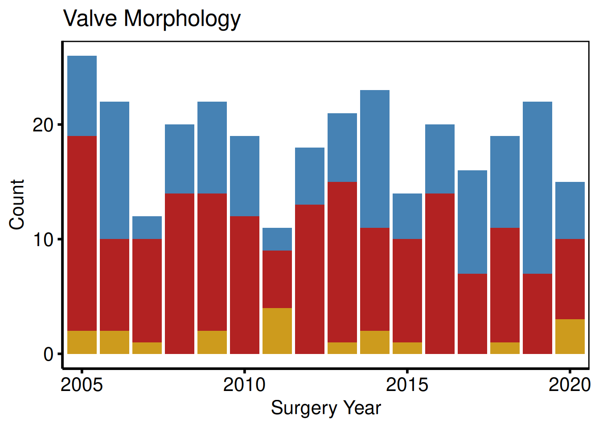
Continuous: scatter + LOESS
Continuous columns produce a scatter plot with a LOESS smoother overlay. Where y_col is NA, a rug mark is drawn on the x-axis.
eda_plot(dta_eda, x_col = "op_years", y_col = "ef",
y_label = "Ejection Fraction (%)") +
scale_colour_manual(values = c("firebrick"), guide = "none") +
scale_x_continuous(breaks = seq(0, 15, 5)) +
scale_y_continuous(limits = c(20, 80), breaks = seq(20, 80, 20)) +
labs(x = "Years from First Surgery Year",
caption = "Tick marks on x-axis: observations with missing EF") +
hvti_theme("manuscript")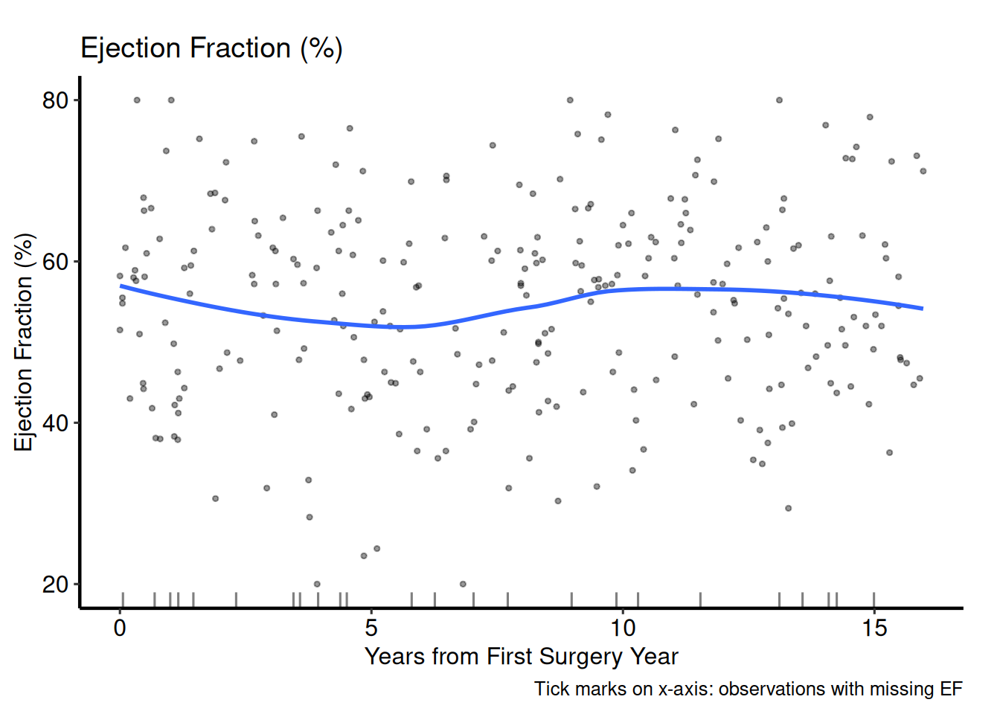
Variable selection and labels (varnames template pattern)
eda_select_vars() subsets columns by name, matching the Var_CatList / Var_ContList + Order_Variables() workflow. A named vector whose names are column names and whose values are human-readable labels drives a single lapply() loop.
bin_vars <- c(male = "Sex (Male)", cabg = "Concomitant CABG")
sub_bin <- eda_select_vars(dta_eda, c("year", names(bin_vars)))
p_bin <- lapply(names(bin_vars), function(cn) {
eda_plot(sub_bin, x_col = "year", y_col = cn,
y_label = bin_vars[[cn]]) +
scale_fill_brewer(palette = "Set1", direction = -1, name = NULL) +
scale_x_discrete(breaks = seq(2005, 2020, 5)) +
labs(x = "Surgery Year", y = "Count") +
hvti_theme("manuscript")
})
p_bin[[1]]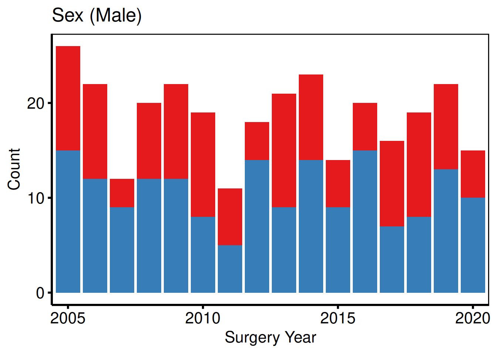
p_bin[[2]]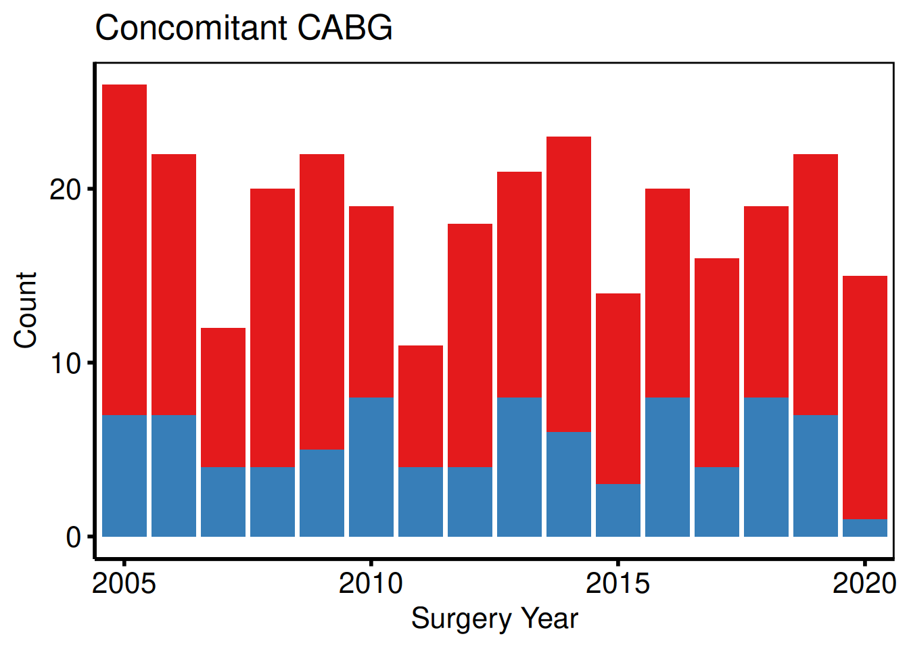
cat_vars <- c(nyha = "NYHA Class",
valve_morph = "Valve Morphology")
sub_cat <- eda_select_vars(dta_eda, c("year", names(cat_vars)))
p_cat <- lapply(names(cat_vars), function(cn) {
eda_plot(sub_cat, x_col = "year", y_col = cn,
y_label = cat_vars[[cn]]) +
scale_fill_brewer(palette = "Set2", name = NULL) +
scale_x_discrete(breaks = seq(2005, 2020, 5)) +
labs(x = "Surgery Year", y = "Count") +
hvti_theme("manuscript")
})
p_cat[[1]]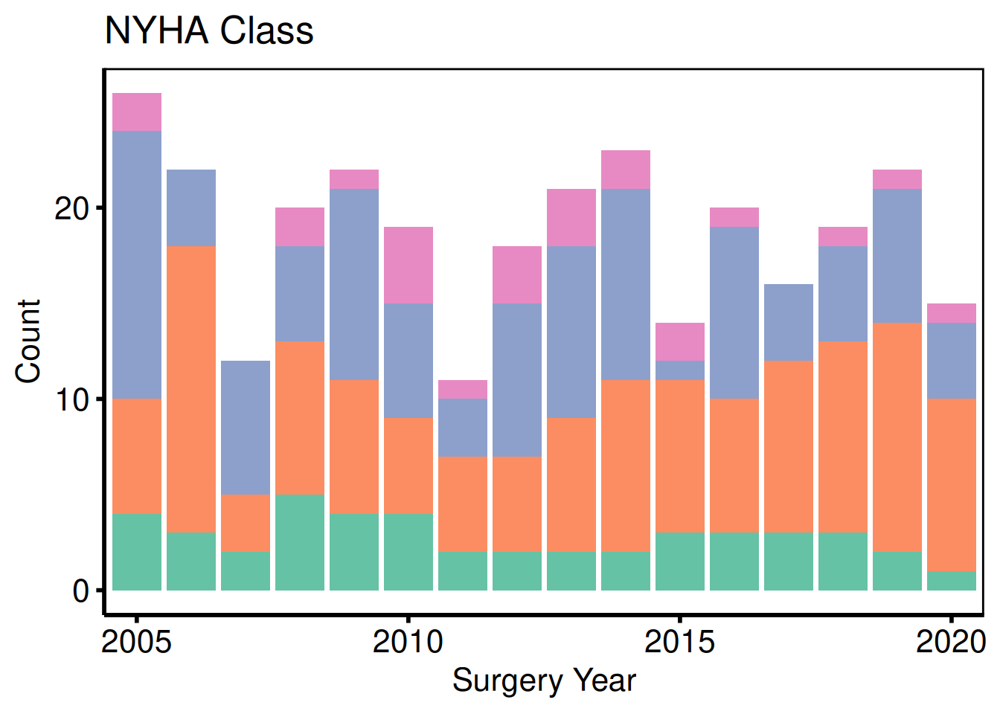
p_cat[[2]]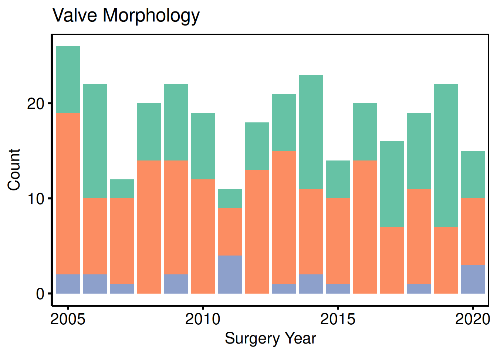
cont_vars <- c(ef = "Ejection Fraction (%)",
lv_mass = "LV Mass Index (g/m\u00b2)",
peak_grad = "Peak Gradient (mmHg)")
sub_cont <- eda_select_vars(dta_eda, c("op_years", names(cont_vars)))
p_cont <- lapply(names(cont_vars), function(cn) {
eda_plot(sub_cont, x_col = "op_years", y_col = cn,
y_label = cont_vars[[cn]]) +
scale_colour_manual(values = c("steelblue"), guide = "none") +
scale_x_continuous(breaks = seq(0, 15, 5)) +
labs(x = "Years from First Surgery Year") +
hvti_theme("manuscript")
})
p_cont[[1]]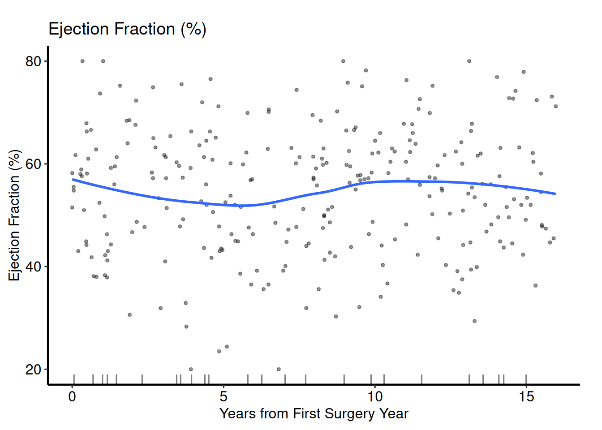
p_cont[[2]]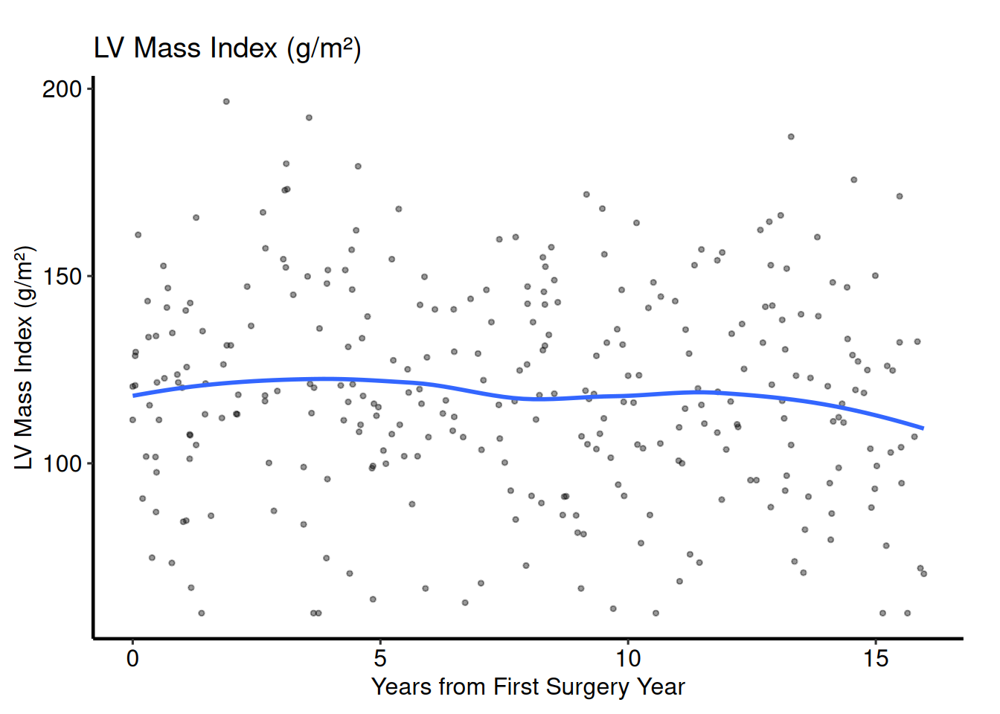
p_cont[[3]]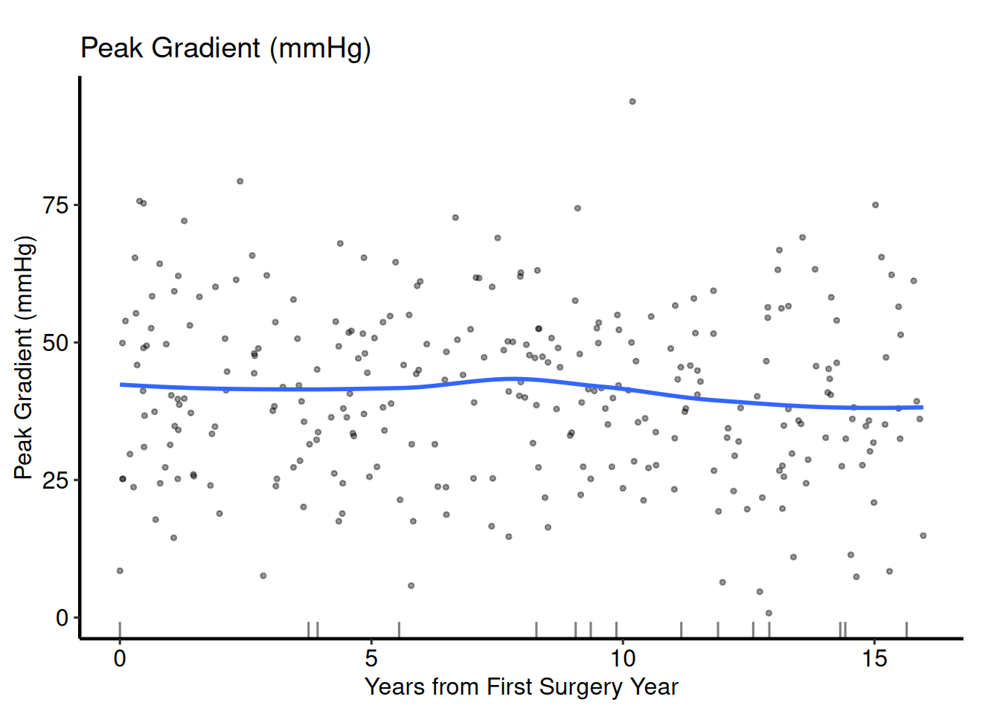
Saving EDA plots
gridExtra::marrangeGrob() arranges multiple plots into a grid and ggsave() writes each page to a separate PDF file.
all_plots <- c(p_bin, p_cat, p_cont)
per_page <- 9L # 3 x 3 grid
for (pg in seq(1, length(all_plots), by = per_page)) {
idx <- seq(pg, min(pg + per_page - 1L, length(all_plots)))
grob <- gridExtra::marrangeGrob(all_plots[idx], nrow = 3, ncol = 3)
ggsave(
filename = sprintf("../graphs/eda_page%02d.pdf", ceiling(pg / per_page)),
plot = grob,
width = 14,
height = 14
)
}Alluvial (Sankey) Plot
alluvial_plot() produces an alluvial (Sankey-style) diagram using ggalluvial. Each row of the input is a unique combination of axis values with an associated patient count; flows are drawn proportional to that count. Ports tp.dp.female_bicus_preAR_sankey.R.
Sample data
dta_al <- sample_alluvial_data(n = 300, seed = 42)
axes <- c("pre_ar", "procedure", "post_ar")
head(dta_al) pre_ar procedure post_ar freq
1 Mild Repair Mild 3
2 Moderate Repair Mild 7
4 Severe Repair Mild 5
5 Mild Replacement Mild 3
6 Moderate Replacement Mild 25
8 Severe Replacement Mild 17Bare plot
alluvial_plot(dta_al, axes = axes, y_col = "freq")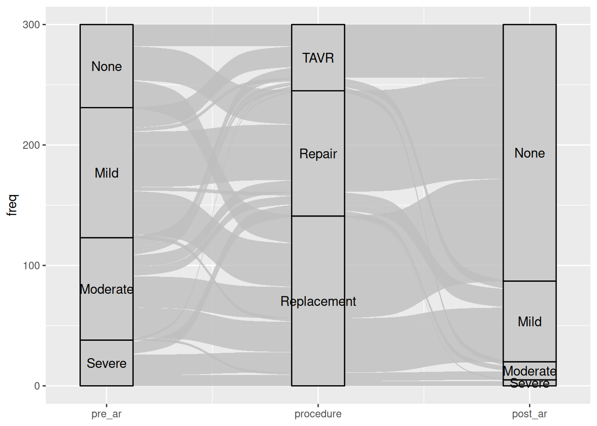
Fill flows by pre-operative grade
alluvial_plot(dta_al, axes = axes, y_col = "freq",
fill_col = "pre_ar") +
scale_fill_manual(
values = c(None = "steelblue",
Mild = "goldenrod",
Moderate = "darkorange",
Severe = "firebrick"),
name = "Pre-op AR"
) +
scale_colour_manual(
values = c(None = "steelblue",
Mild = "goldenrod",
Moderate = "darkorange",
Severe = "firebrick"),
guide = "none"
) +
scale_x_continuous(
breaks = 1:3,
labels = c("Pre-op AR", "Procedure", "Post-op AR"),
expand = c(0.05, 0.05)
) +
labs(y = "Patients (n)",
title = "AV Regurgitation: Pre- to Post-operative") +
hvti_theme("manuscript")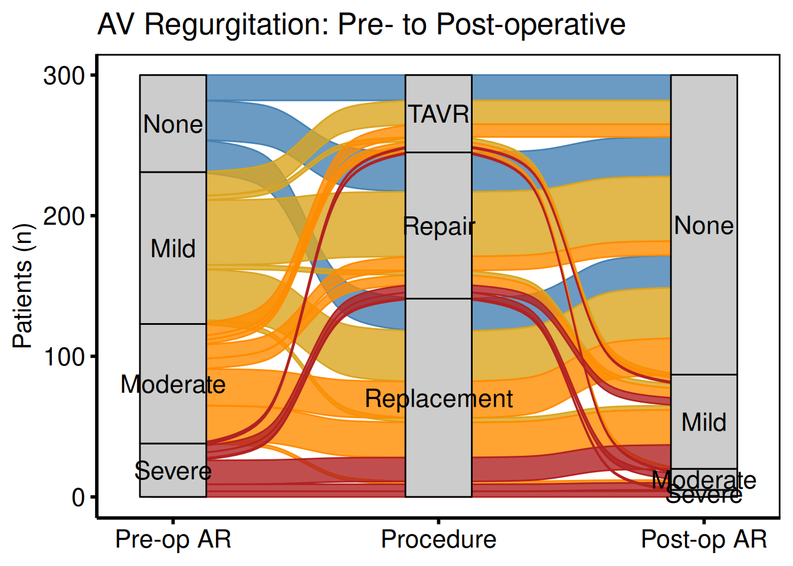
Two-axis before / after comparison
alluvial_plot(
dta_al,
axes = c("pre_ar", "post_ar"),
y_col = "freq",
fill_col = "pre_ar",
axis_labels = c("Pre-operative", "Post-operative")
) +
scale_fill_brewer(palette = "RdYlGn", direction = -1,
name = "AR Grade") +
scale_colour_brewer(palette = "RdYlGn", direction = -1,
guide = "none") +
annotate("text", x = 1.5, y = 250,
label = "Improvement after surgery",
size = 3.5, fontface = "italic") +
labs(y = "Patients (n)",
title = "AV Regurgitation Before and After Surgery") +
hvti_theme("manuscript")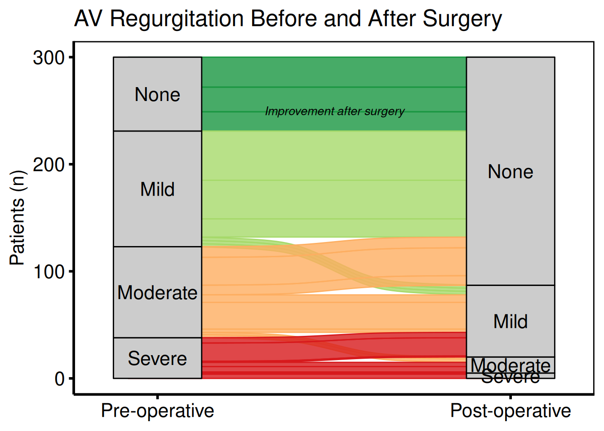
Saving
p_al <- alluvial_plot(dta_al, axes = axes, y_col = "freq",
fill_col = "pre_ar") +
scale_fill_brewer(palette = "RdYlGn", direction = -1) +
scale_colour_brewer(palette = "RdYlGn", direction = -1, guide = "none") +
labs(y = "Patients (n)") +
hvti_theme("manuscript")
ggsave("../graphs/alluvial.pdf", p_al, width = 8, height = 6)Cluster Stability Sankey Plot
cluster_sankey_plot() draws a Sankey diagram showing how patients flow between labelled clusters as the number of clusters K increases. It ports the PAM cluster stability figure from the HVTI clustering analysis pipeline. Each column represents one value of K (default K = 2 to 9); each band shows the fraction of patients whose assignment changes between consecutive K values. Node labels show the cluster letter and count.
Requires ggsankey (not on CRAN):
remotes::install_github("davidsjoberg/ggsankey")Sample data
dta_san <- sample_cluster_sankey_data(n = 300, seed = 42)
head(dta_san) C2 C3 C4 C5 C6 C7 C8 C9
1 B B B B F F H H
2 B B B B F F H H
3 A A A A A A A A
4 A A A A A G G G
5 B B D D D D D D
6 B B B B F F F F
table(dta_san$C9)
B F H D I C E G A
59 39 22 26 11 42 38 22 41 Default plot (K = 2 to 9)
cluster_sankey_plot(dta_san) +
labs(title = "Cluster Stability: K = 2 to 9") +
hvti_theme("manuscript")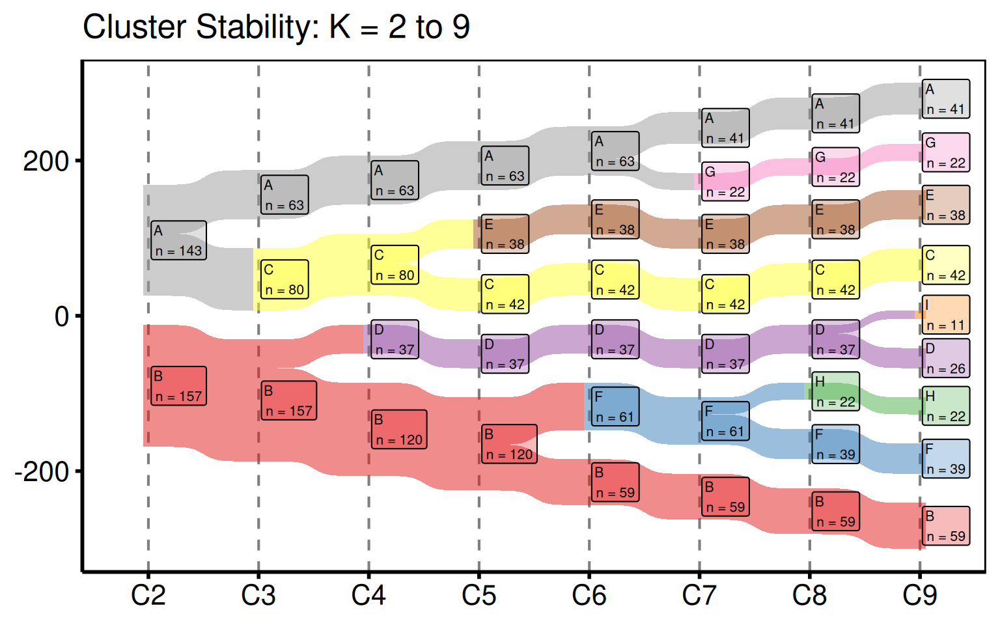
Custom colour palette
Replace the default Set1 colours with a fully custom named vector. Names must match the node labels in the data.
my_cols <- c(
A = "#1f77b4", B = "#ff7f0e", C = "#2ca02c", D = "#d62728",
E = "#9467bd", F = "#8c564b", G = "#e377c2", H = "#7f7f7f",
I = "#bcbd22"
)
cluster_sankey_plot(dta_san, node_colours = my_cols) +
labs(title = "Cluster Stability: K = 2 to 9") +
hvti_theme("manuscript")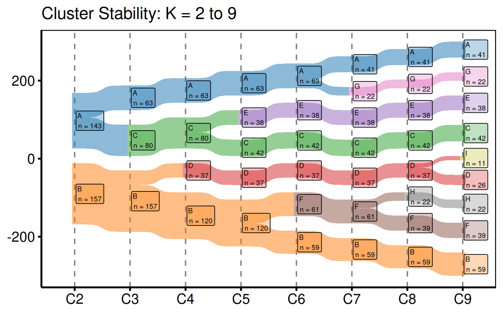
Subset of K values
Pass a shorter cluster_cols vector to show only a range of K.
cluster_sankey_plot(dta_san, cluster_cols = paste0("C", 2:6)) +
labs(title = "Cluster Stability: K = 2 to 6") +
hvti_theme("manuscript")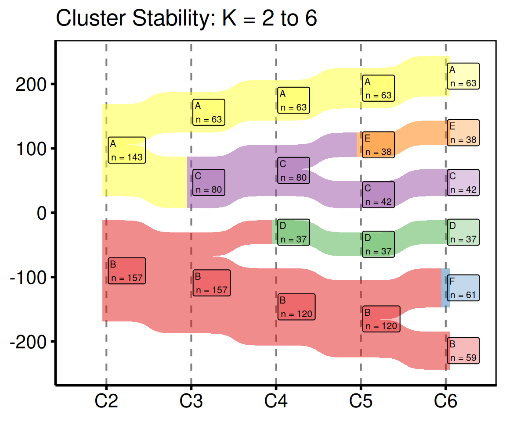
Saving
p_san <- cluster_sankey_plot(dta_san) +
labs(title = "PAM Cluster Stability") +
hvti_theme("manuscript")
ggsave("../graphs/sankey_clusters.pdf", p_san, width = 8, height = 5)Hazard Plot
hazard_plot() plots pre-computed parametric survival, hazard, or cumulative-hazard curves from a fitted Weibull (or other parametric) model, with optional Kaplan-Meier empirical overlay and population life-table reference. It ports the entire tp.hp.dead.* SAS template family.
The input data comes from two sources that map directly to the SAS output:
| Column set | SAS dataset | R function |
|---|---|---|
| Parametric prediction grid |
predict (SSURVIV, SCLLSURV, SCLUSURV) |
sample_hazard_data() |
| KM empirical overlay |
plout (CUM_SURV, CL_LOWER, CL_UPPER) |
sample_hazard_empirical() |
| Population life table | smatched |
sample_life_table() |
Sample data
dat_hp <- sample_hazard_data(n = 500, time_max = 10)
emp_hp <- sample_hazard_empirical(n = 500, time_max = 10, n_bins = 6)
head(dat_hp) time survival surv_lower surv_upper hazard haz_lower haz_upper
1 0.01000000 99.99558 99.93731 100 0.6629126 0.3996474 1.099602
2 0.03002004 99.97702 99.84413 100 1.1485818 0.6924408 1.905203
3 0.05004008 99.95054 99.75561 100 1.4829116 0.8939968 2.459770
4 0.07006012 99.91808 99.66720 100 1.7546549 1.0578216 2.910523
5 0.09008016 99.88059 99.57770 100 1.9896233 1.1994760 3.300275
6 0.11010020 99.83868 99.48662 100 2.1996335 1.3260840 3.648628
cumhaz cumhaz_lower cumhaz_upper
1 0.004419417 0 0.5871202
2 0.022986980 0 1.3519229
3 0.049470012 0 1.9990187
4 0.081954223 0 2.5912321
5 0.119483723 0 3.1493081
6 0.161453396 0 3.6834317Survival curve with KM overlay
The most common tp.hp.dead.sas output: smooth parametric survival with confidence band plus discrete KM empirical circles and error bars.
hazard_plot(
dat_hp,
estimate_col = "survival",
lower_col = "surv_lower",
upper_col = "surv_upper",
empirical = emp_hp,
emp_lower_col = "lower",
emp_upper_col = "upper"
) +
scale_colour_manual(values = c("steelblue"), guide = "none") +
scale_fill_manual(values = c("steelblue"), guide = "none") +
scale_x_continuous(limits = c(0, 10), breaks = 0:10) +
scale_y_continuous(limits = c(0, 100), breaks = seq(0, 100, 20),
labels = function(x) paste0(x, "%")) +
labs(x = "Years", y = "Survival (%)") +
hvti_theme("manuscript")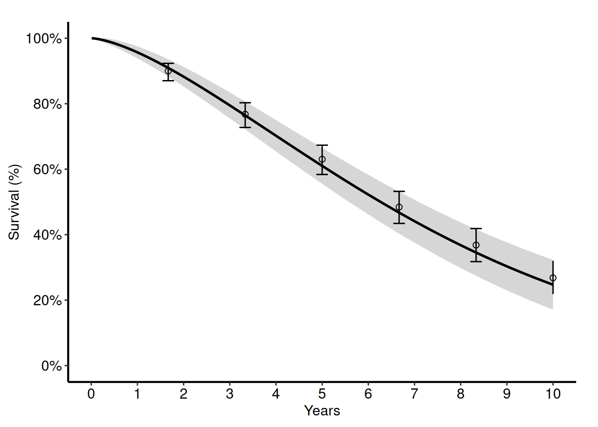
Hazard rate curve
Switching estimate_col to "hazard" (and the matching CI columns) shows the instantaneous hazard rate (%/year) instead of survival.
hazard_plot(
dat_hp,
estimate_col = "hazard",
lower_col = "haz_lower",
upper_col = "haz_upper"
) +
scale_colour_manual(values = c("firebrick"), guide = "none") +
scale_fill_manual(values = c("firebrick"), guide = "none") +
scale_x_continuous(limits = c(0, 10), breaks = 0:10) +
scale_y_continuous(limits = c(0, 30),
labels = function(x) paste0(x, "%/yr")) +
labs(x = "Years", y = "Hazard (%/year)") +
hvti_theme("manuscript")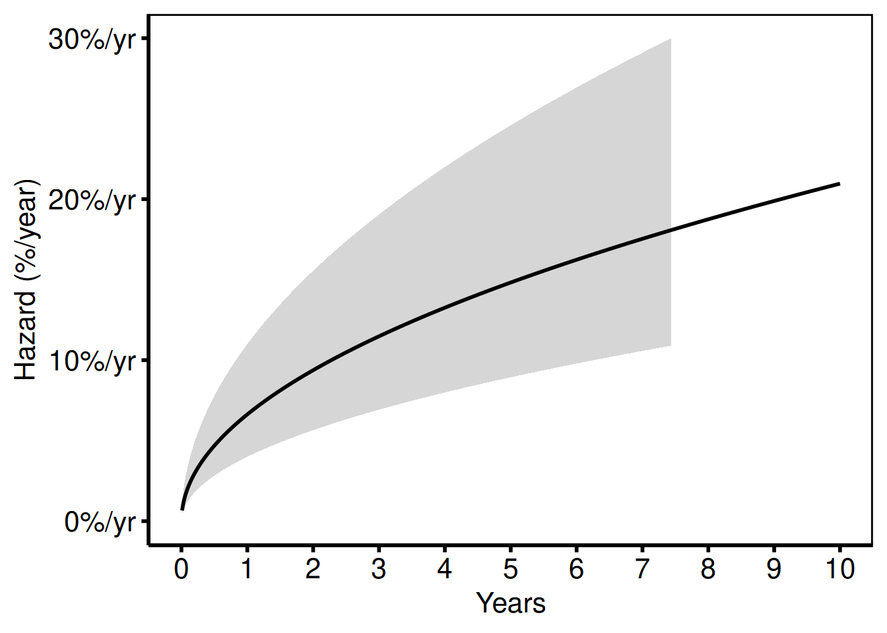
Cumulative hazard
Used for readmission and repeated-event analyses (tp.hp.event.weighted.sas, tp.hp.repeated_events.sas). The "cumhaz" column equals -log(S) * 100.
hazard_plot(
dat_hp,
estimate_col = "cumhaz",
lower_col = "cumhaz_lower",
upper_col = "cumhaz_upper"
) +
scale_colour_manual(values = c("darkorange"), guide = "none") +
scale_fill_manual(values = c("darkorange"), guide = "none") +
scale_x_continuous(limits = c(0, 10), breaks = 0:10) +
labs(x = "Years", y = "Cumulative Hazard (%)") +
hvti_theme("manuscript")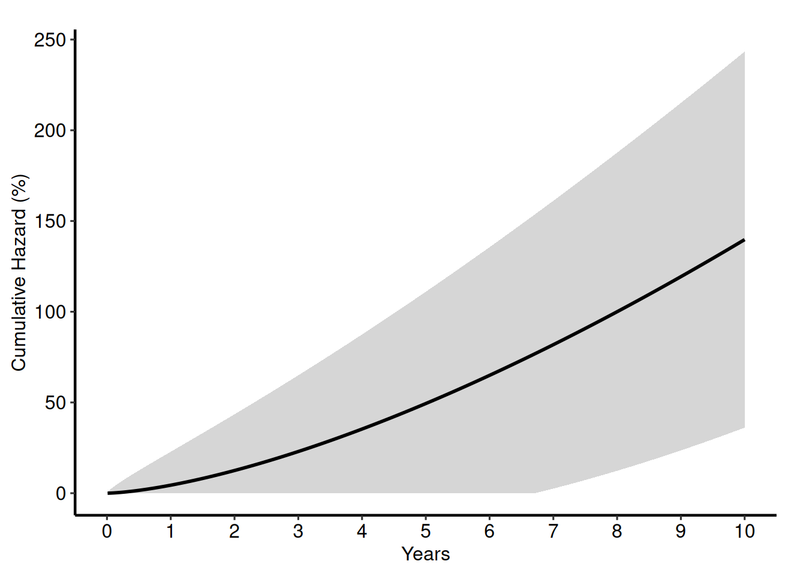
Stratified by group
Pass group_col to compare two or more groups (tp.hp.dead.tkdn.stratified.sas).
dat_strat <- sample_hazard_data(
n = 400, time_max = 10,
groups = c("No Takedown" = 1.0, "Takedown" = 0.65)
)
emp_strat <- sample_hazard_empirical(
n = 400, time_max = 10, n_bins = 6,
groups = c("No Takedown" = 1.0, "Takedown" = 0.65)
)
hazard_plot(
dat_strat,
estimate_col = "survival",
lower_col = "surv_lower",
upper_col = "surv_upper",
group_col = "group",
empirical = emp_strat,
emp_lower_col = "lower",
emp_upper_col = "upper"
) +
scale_colour_manual(
values = c("No Takedown" = "steelblue", "Takedown" = "firebrick"),
name = NULL
) +
scale_fill_manual(
values = c("No Takedown" = "steelblue", "Takedown" = "firebrick"),
guide = "none"
) +
scale_x_continuous(limits = c(0, 10), breaks = 0:10) +
scale_y_continuous(limits = c(0, 100), breaks = seq(0, 100, 20),
labels = function(x) paste0(x, "%")) +
labs(x = "Years after Esophagostomy", y = "Survival (%)") +
hvti_theme("manuscript")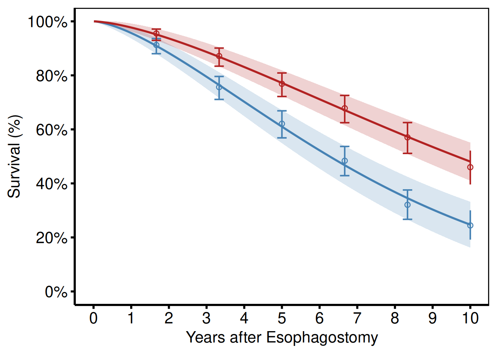
Life-table overlay
tp.hp.dead.age_with_population_life_table.sas and tp.hp.dead.uslife.stratifed.sas overlay US population life-table survival (dashed lines) on age-stratified study curves. Pass the life-table data frame to reference and set ref_group_col to vary the linetype by age group.
dat_age <- sample_hazard_data(
n = 600, time_max = 12,
groups = c("<65" = 0.5, "65\u201380" = 1.0, "\u226580" = 1.8)
)
emp_age <- sample_hazard_empirical(
n = 600, time_max = 12, n_bins = 6,
groups = c("<65" = 0.5, "65\u201380" = 1.0, "\u226580" = 1.8)
)
lt <- sample_life_table(
age_groups = c("<65", "65\u201380", "\u226580"),
age_mids = c(55, 72, 85),
time_max = 12
)
hazard_plot(
dat_age,
estimate_col = "survival",
lower_col = "surv_lower",
upper_col = "surv_upper",
group_col = "group",
empirical = emp_age,
emp_lower_col = "lower",
emp_upper_col = "upper",
reference = lt,
ref_estimate_col = "survival",
ref_group_col = "group"
) +
scale_colour_manual(
values = c("<65" = "steelblue", "65\u201380" = "forestgreen",
"\u226580" = "firebrick"),
name = "Age group"
) +
scale_fill_manual(
values = c("<65" = "steelblue", "65\u201380" = "forestgreen",
"\u226580" = "firebrick"),
guide = "none"
) +
scale_x_continuous(limits = c(0, 12), breaks = seq(0, 12, 2)) +
scale_y_continuous(limits = c(0, 100), breaks = seq(0, 100, 20),
labels = function(x) paste0(x, "%")) +
labs(x = "Years", y = "Survival (%)",
caption = "Dashed lines: US population life table") +
hvti_theme("manuscript")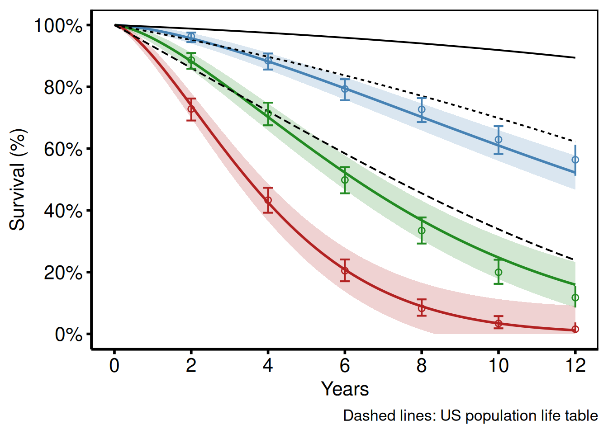
Survival Difference (Life-Gained) Plot
survival_difference_plot() plots the difference S_2(t) - S_1(t) between two groups over time, with an optional confidence band. This ports tp.hp.dead.life-gained.sas (HAZDIFL macro output).
Sample data
diff_dat <- sample_survival_difference_data(
n = 500,
groups = c("Control" = 1.0, "Treatment" = 0.70)
)
head(diff_dat) time difference diff_lower diff_upper group1_surv group2_surv
1 0.01000000 0.001831068 -0.03739885 0.04106099 99.99558 99.99741
2 0.03002004 0.009522643 -0.08737593 0.10642122 99.97702 99.98654
3 0.05004008 0.020489267 -0.13072627 0.17170481 99.95054 99.97103
4 0.07006012 0.033934691 -0.17121839 0.23908777 99.91808 99.95201
5 0.09008016 0.049459769 -0.21006489 0.30898443 99.88059 99.93005
6 0.11010020 0.066810699 -0.24784775 0.38146915 99.83868 99.90549Survival difference curve
survival_difference_plot(
diff_dat,
lower_col = "diff_lower",
upper_col = "diff_upper"
) +
scale_colour_manual(values = c("steelblue"), guide = "none") +
scale_fill_manual(values = c("steelblue"), guide = "none") +
ggplot2::geom_hline(yintercept = 0, linetype = "dashed",
colour = "grey50") +
scale_x_continuous(limits = c(0, 10), breaks = 0:10) +
scale_y_continuous(limits = c(-5, 40),
labels = function(x) paste0(x, "%")) +
labs(x = "Years", y = "Survival Difference (%)") +
hvti_theme("manuscript")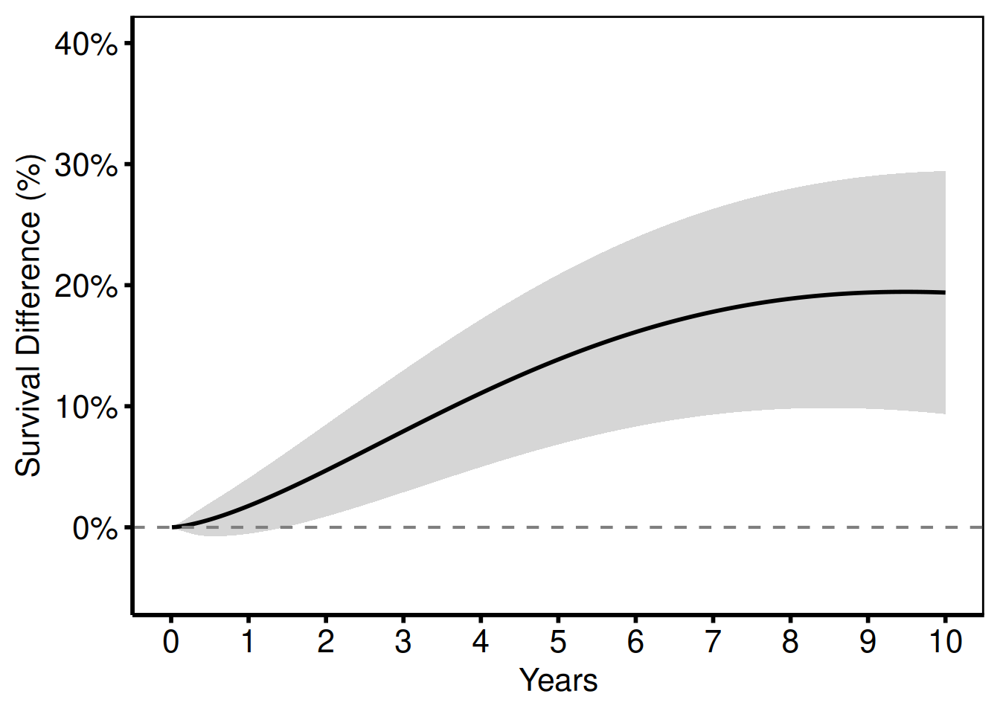
Multiple comparisons
Combine several two-group differences into one long data frame and use group_col to overlay them.
d1 <- sample_survival_difference_data(
groups = c("Medical Mgmt" = 1.0, "TF-TAVR" = 0.70), seed = 1L
)
d1$comparison <- "TF-TAVR vs Medical Mgmt"
d2 <- sample_survival_difference_data(
groups = c("TA-TAVR" = 0.90, "TF-TAVR" = 0.70), seed = 2L
)
d2$comparison <- "TF-TAVR vs TA-TAVR"
d3 <- sample_survival_difference_data(
groups = c("AVR" = 0.80, "TF-TAVR" = 0.70), seed = 3L
)
d3$comparison <- "TF-TAVR vs AVR"
survival_difference_plot(rbind(d1, d2, d3),
group_col = "comparison") +
scale_colour_brewer(palette = "Set1", name = NULL) +
scale_fill_brewer(palette = "Set1", guide = "none") +
ggplot2::geom_hline(yintercept = 0, linetype = "dashed",
colour = "grey50") +
scale_x_continuous(limits = c(0, 10), breaks = 0:10) +
labs(x = "Years", y = "Survival Difference (%)") +
hvti_theme("manuscript")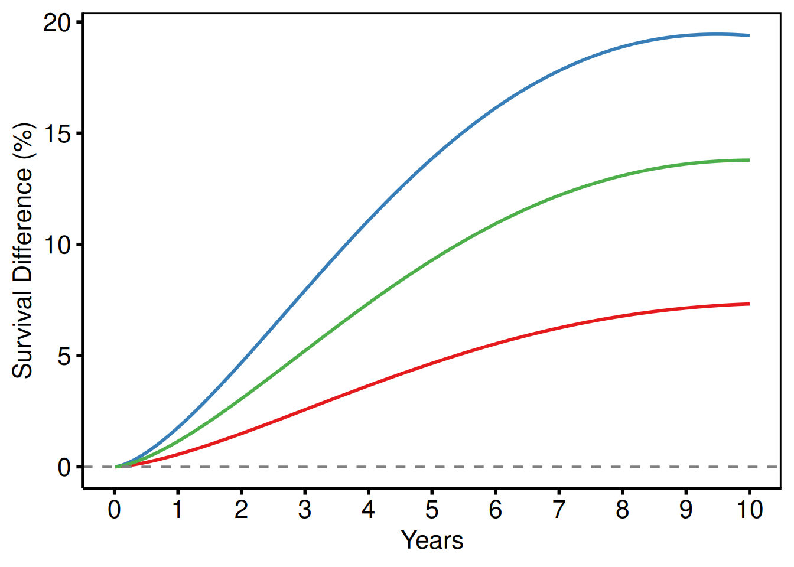
Number Needed to Treat (NNT) Plot
nnt_plot() plots the number needed to treat and absolute risk reduction over time, porting the NNT component of tp.hp.numtreat.survdiff.matched.sas.
Sample data
nnt_dat <- sample_nnt_data(
n = 500,
time_max = 20,
groups = c("SVG" = 1.0, "ITA" = 0.75)
)
head(nnt_dat) time arr arr_lower arr_upper nnt nnt_lower nnt_upper
1 0.01000000 0.001548865 -0.03849194 0.04158967 NA NA NA
2 0.05006012 0.017341632 -0.13725732 0.17194059 NA 581.5963 NA
3 0.09012024 0.041863418 -0.22369142 0.30741825 NA 325.2897 NA
4 0.13018036 0.072628007 -0.30691800 0.45217401 NA 221.1538 NA
5 0.17024048 0.108520503 -0.38909707 0.60613807 921.4849 164.9789 NA
6 0.21030060 0.148855060 -0.47112585 0.76883597 671.7944 130.0668 NANNT curve
NNT decreases over time as the treatment benefit accumulates.
nnt_plot(
nnt_dat,
lower_col = "nnt_lower",
upper_col = "nnt_upper"
) +
scale_colour_manual(values = c("steelblue"), guide = "none") +
scale_fill_manual(values = c("steelblue"), guide = "none") +
scale_x_continuous(limits = c(0, 20), breaks = seq(0, 20, 5)) +
scale_y_continuous(limits = c(0, 50), breaks = seq(0, 50, 10)) +
labs(x = "Years", y = "Number Needed to Treat") +
hvti_theme("manuscript")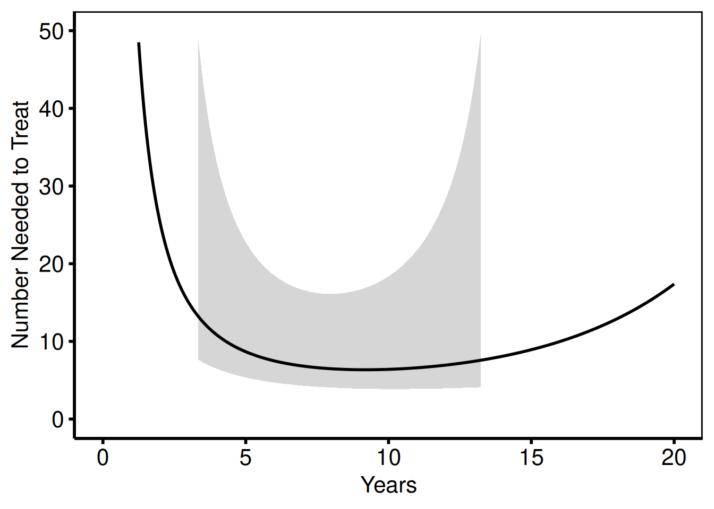
Absolute risk reduction
The same data, plotted as ARR (%) instead of NNT.
nnt_plot(
nnt_dat,
estimate_col = "arr",
lower_col = "arr_lower",
upper_col = "arr_upper"
) +
scale_colour_manual(values = c("firebrick"), guide = "none") +
scale_fill_manual(values = c("firebrick"), guide = "none") +
scale_x_continuous(limits = c(0, 20), breaks = seq(0, 20, 5)) +
scale_y_continuous(limits = c(0, 50),
labels = function(x) paste0(x, "%")) +
labs(x = "Years", y = "Absolute Risk Reduction (%)") +
hvti_theme("manuscript")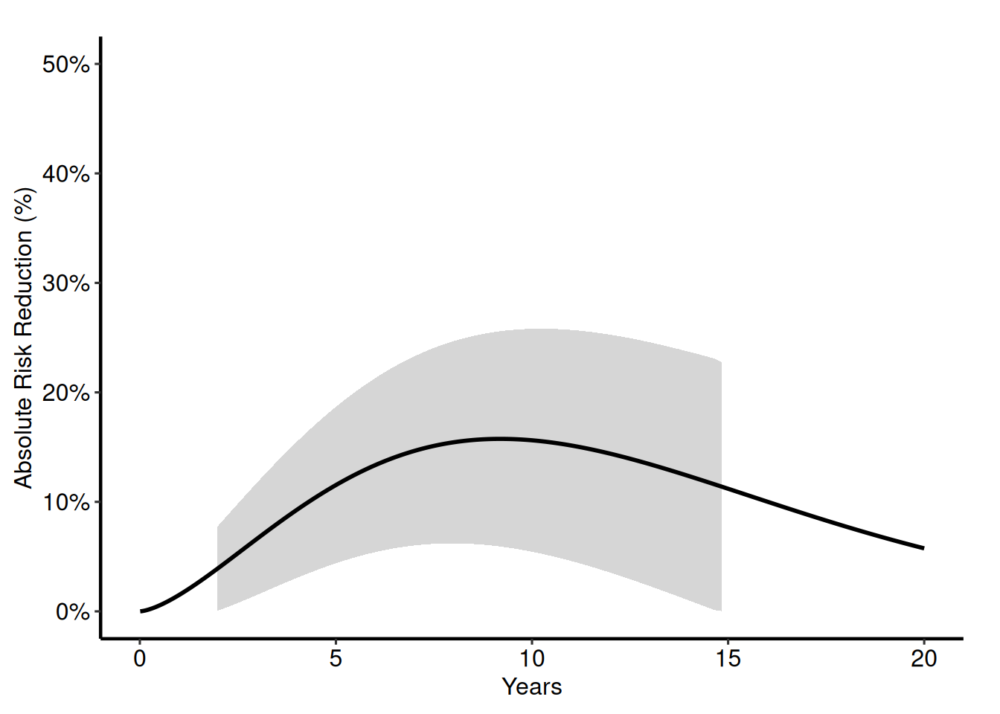
Saving
p_hp <- hazard_plot(
dat_hp,
estimate_col = "survival",
lower_col = "surv_lower",
upper_col = "surv_upper",
empirical = emp_hp,
emp_lower_col = "lower",
emp_upper_col = "upper"
) +
scale_colour_manual(values = c("steelblue"), guide = "none") +
scale_fill_manual(values = c("steelblue"), guide = "none") +
labs(x = "Years", y = "Survival (%)") +
hvti_theme("manuscript")
ggsave("../graphs/hazard_survival.pdf", p_hp, width = 11.5, height = 8)Temporal Trend Plot
trends_plot() ports the pattern from five SAS/R templates:
| Template | Study | Key pattern |
|---|---|---|
tp.rp.trends.sas |
Tricuspid valve replacement, 1968–2000 | Single continuous outcome vs operation year |
tp.lp.trends.sas |
Post-infarct VSD, 1969–2000 | Binary % outcomes, x 1970–2000 by 10, y 0–100 |
tp.lp.trends.age.sas |
Mitral valve surgery, 1990–1999 | Binary % vs age (not year), x 25–85 by 10 |
tp.lp.trends.polytomous.sas |
Tricuspid valve repair, 1990–1999 | Polytomous (≥3) groups, x 1990–1999 by 1 |
tp.dp.trends.R |
Mitral degeneration, 1985–2015 | NYHA %, LV mass, %CHF, case volume, LOS |
The function accepts patient-level data and computes annual summaries (mean or median) internally. It returns a bare ggplot object. Compose with scale_colour_*, scale_shape_*, scale_x_continuous(), scale_y_continuous(), coord_cartesian(), labs(), annotate(), and hvti_theme().
Sample data
# year_range matches the 1968-2000 Tricuspid Valve Replacement study in the
# SAS template (tp.rp.trends.sas)
dta_tr <- sample_trends_data(
n = 600,
year_range = c(1968L, 2000L),
groups = c("Group I", "Group II", "Group III", "Group IV")
)
head(dta_tr) year value group
1 1975 68.94 Group I
2 1973 58.54 Group I
3 1977 42.45 Group I
4 1994 42.06 Group I
5 1987 35.46 Group II
6 1992 27.59 Group IVSingle variable: cases/year
The SAS template plots annual case volume against operation year with axisx order=(1968 to 2000 by 4) and axisy order=(0 to 10 by 2).
one_grp <- dta_tr[dta_tr$group == "Group I", ]
trends_plot(one_grp, group_col = NULL) +
scale_x_continuous(limits = c(1968, 2000), breaks = seq(1968, 2000, 4)) +
scale_y_continuous(limits = c(0, 10), breaks = seq(0, 10, 2)) +
labs(x = "Year", y = "Cases/year") +
hvti_theme("manuscript")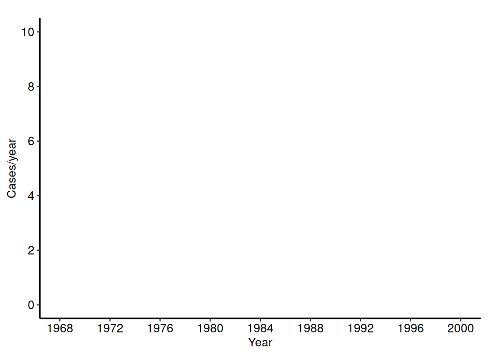
Single variable: age
The age figure uses the same x-axis and axisy order=(30 to 70 by 10).
trends_plot(one_grp, group_col = NULL) +
scale_x_continuous(limits = c(1968, 2000), breaks = seq(1968, 2000, 4)) +
scale_y_continuous(limits = c(30, 70), breaks = seq(30, 70, 10)) +
labs(x = "Year", y = "Age (years)") +
hvti_theme("manuscript")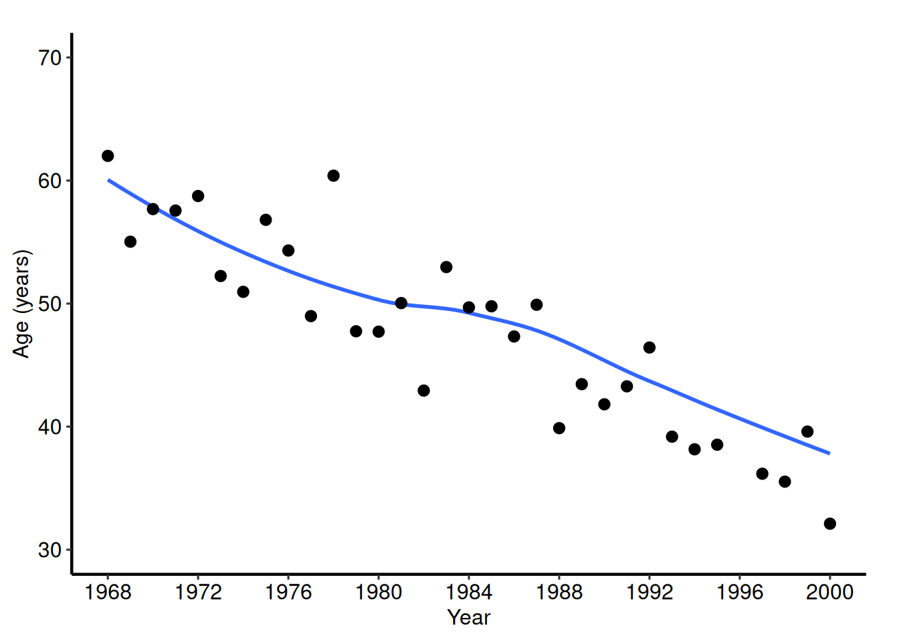
Multiple groups with scale_colour_brewer
trends_plot(dta_tr) +
scale_colour_brewer(palette = "Set1", name = "Group") +
scale_shape_manual(
values = c("Group I" = 15L, "Group II" = 19L,
"Group III" = 17L, "Group IV" = 18L),
name = "Group"
) +
scale_x_continuous(limits = c(1968, 2000), breaks = seq(1968, 2000, 4)) +
labs(x = "Year", y = "Outcome (%)") +
hvti_theme("manuscript")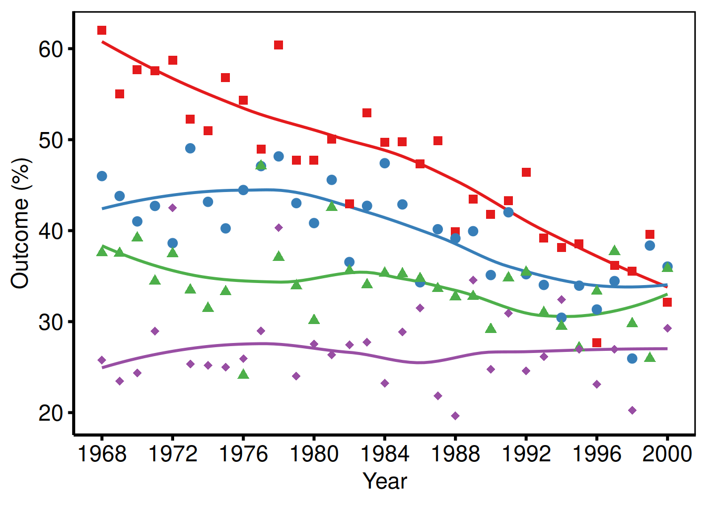
Median summary + manual colours (NYHA style)
trends_plot(dta_tr, summary_fn = "median") +
scale_colour_manual(
values = c(
"Group I" = "steelblue",
"Group II" = "firebrick",
"Group III" = "forestgreen",
"Group IV" = "goldenrod3"
),
name = "NYHA Class"
) +
scale_shape_manual(
values = c("Group I" = 15L, "Group II" = 19L,
"Group III" = 17L, "Group IV" = 18L),
name = "NYHA Class"
) +
scale_x_continuous(limits = c(1968, 2000), breaks = seq(1968, 2000, 4)) +
scale_y_continuous(limits = c(0, 80), breaks = seq(0, 80, 20)) +
labs(x = "Year", y = "%", title = "Preoperative NYHA Class Over Time") +
annotate("text", x = 1980, y = 75,
label = "Trend: Preoperative NYHA", size = 4) +
hvti_theme("manuscript")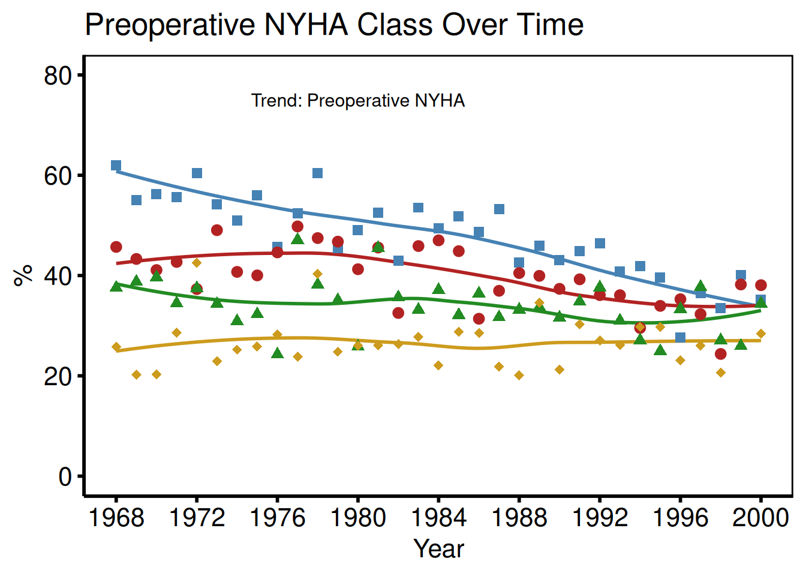
With confidence ribbon
trends_plot(one_grp, group_col = NULL, se = TRUE, alpha = 0.2) +
scale_x_continuous(limits = c(1968, 2000), breaks = seq(1968, 2000, 4)) +
labs(x = "Year", y = "Cases/year") +
hvti_theme("manuscript")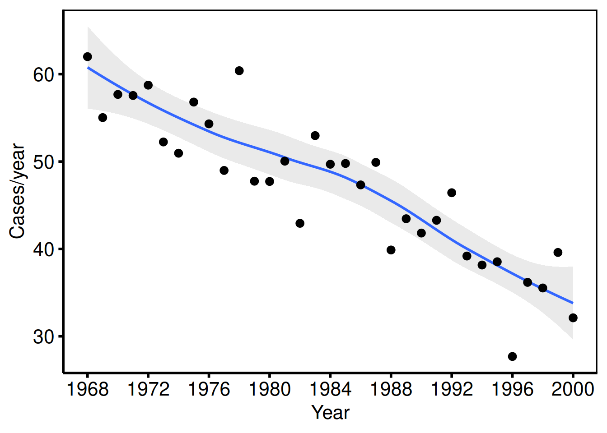
Binary % outcomes (tp.lp.trends.sas)
The VSD template plots multiple binary outcomes (cardiogenic shock %, pre-op IABP %, inotropes %) on the same axes: axisx order=(1970 to 2000 by 10), axisy order=(0 to 100 by 10). Each outcome becomes a group.
dta_lp <- sample_trends_data(
n = 800,
year_range = c(1970L, 2000L),
groups = c("Shock %", "Pre-op IABP %", "Inotropes %")
)
trends_plot(dta_lp) +
scale_colour_manual(
values = c("Shock %" = "steelblue",
"Pre-op IABP %" = "firebrick",
"Inotropes %" = "forestgreen"),
name = NULL
) +
scale_shape_manual(
values = c("Shock %" = 16L, "Pre-op IABP %" = 15L, "Inotropes %" = 17L),
name = NULL
) +
scale_x_continuous(limits = c(1970, 2000), breaks = seq(1970, 2000, 10)) +
scale_y_continuous(limits = c(0, 100), breaks = seq(0, 100, 10)) +
coord_cartesian(xlim = c(1970, 2000), ylim = c(0, 100)) +
labs(x = "Year", y = "Percent (%)") +
hvti_theme("manuscript")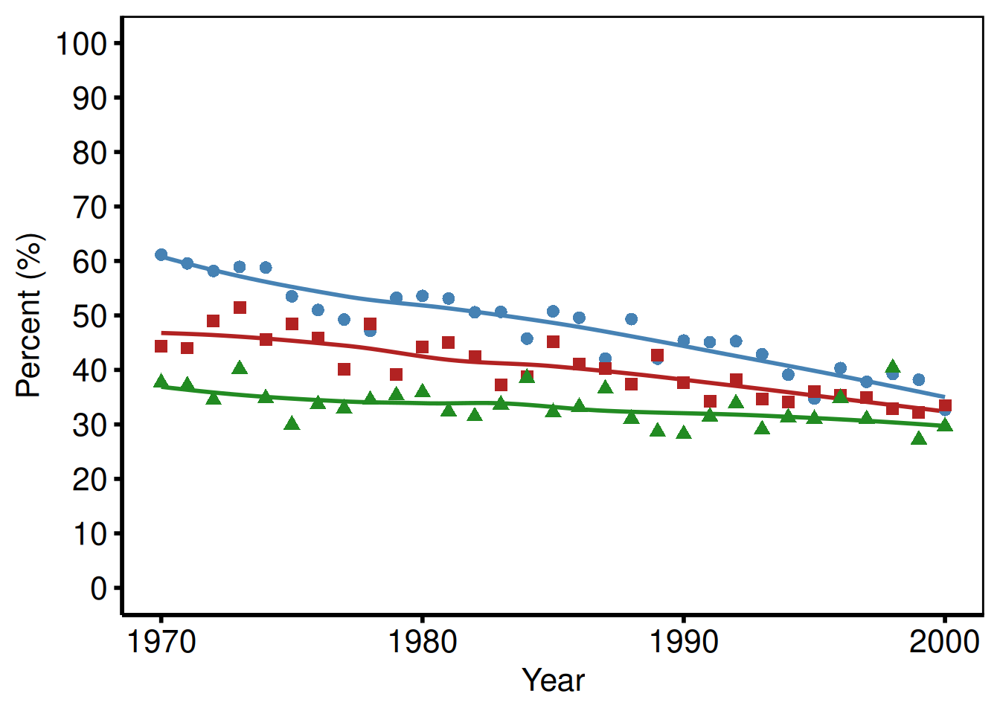
Age as x-axis (tp.lp.trends.age.sas)
The mitral valve template uses patient age (not year) on the x-axis: axisx order=(25 to 85 by 10), axisy order=(0 to 100 by 20). Pass real data with an age column and set x_col = "age". The example below uses the sample data’s year column relabelled for illustration.
# With real data: x_col = "age", x_col_data has values ~25 to 85
# Illustration using sample_trends_data() with year_range spanning age range:
dta_age <- sample_trends_data(
n = 600,
year_range = c(25L, 85L),
groups = c("Repair %", "Bioprosthesis %"),
seed = 7L
)
trends_plot(dta_age) +
scale_colour_manual(
values = c("Repair %" = "steelblue", "Bioprosthesis %" = "firebrick"),
name = NULL
) +
scale_shape_manual(
values = c("Repair %" = 16L, "Bioprosthesis %" = 15L),
name = NULL
) +
scale_x_continuous(limits = c(25, 85), breaks = seq(25, 85, 10)) +
scale_y_continuous(limits = c(0, 100), breaks = seq(0, 100, 20)) +
coord_cartesian(xlim = c(25, 85), ylim = c(0, 100)) +
labs(x = "Age (years)", y = "Percent (%)") +
hvti_theme("manuscript")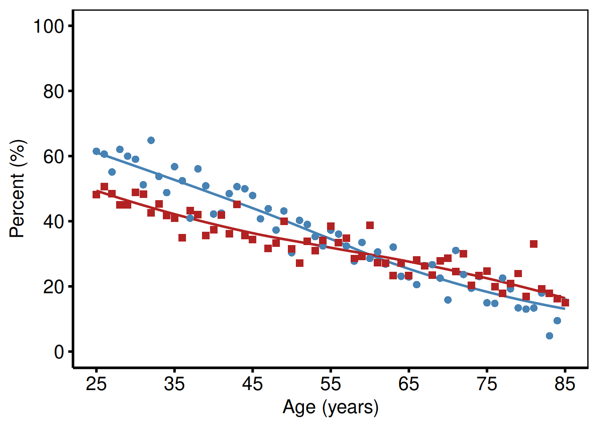
Polytomous groups — repair types (tp.lp.trends.polytomous.sas)
Four repair categories over a short study period (1990–1999): the SAS template uses axisx order=(1990 to 1999 by 1) for fine year breaks.
dta_poly <- sample_trends_data(
n = 800,
year_range = c(1990L, 1999L),
groups = c("CE", "Cosgrove", "Periguard", "DeVega"),
seed = 5L
)
trends_plot(dta_poly) +
scale_colour_manual(
values = c(CE = "steelblue",
Cosgrove = "firebrick",
Periguard = "forestgreen",
DeVega = "goldenrod3"),
name = "Repair type"
) +
scale_shape_manual(
values = c(CE = 15L, Cosgrove = 19L, Periguard = 17L, DeVega = 18L),
name = "Repair type"
) +
scale_x_continuous(limits = c(1990, 1999), breaks = seq(1990, 1999, 1)) +
scale_y_continuous(limits = c(0, 100), breaks = seq(0, 100, 10)) +
coord_cartesian(xlim = c(1990, 1999), ylim = c(0, 100)) +
labs(x = "Year", y = "Percent (%)") +
hvti_theme("manuscript")LV mass index (tp.dp.trends.R — plot2)
Continuous outcome with a larger y range: scale_y_continuous(breaks=seq(0, 200, 50)), coord_cartesian(xlim = c(1995, 2016), ylim = c(0, 200)).
dta_lv <- sample_trends_data(
n = 800,
year_range = c(1995L, 2015L),
groups = NULL,
seed = 3L
)
trends_plot(dta_lv, group_col = NULL) +
scale_x_continuous(limits = c(1995, 2015), breaks = seq(1995, 2015, 5)) +
scale_y_continuous(limits = c(0, 200), breaks = seq(0, 200, 50)) +
coord_cartesian(xlim = c(1995, 2015), ylim = c(0, 200)) +
labs(x = "Years", y = "LV Mass Index") +
hvti_theme("manuscript")Case volume / total surgeries per year (tp.dp.trends.R — plot4)
dta_vol <- sample_trends_data(
n = 1000,
year_range = c(1985L, 2015L),
groups = NULL,
seed = 9L
)
trends_plot(dta_vol, group_col = NULL) +
scale_x_continuous(limits = c(1985, 2015), breaks = seq(1985, 2015, 5)) +
scale_y_continuous(limits = c(0, 400), breaks = seq(0, 400, 50)) +
coord_cartesian(xlim = c(1985, 2015), ylim = c(0, 400)) +
labs(x = "Years", y = "Surgeries (#)") +
hvti_theme("manuscript")Annotated trend — hospital LOS (tp.dp.trends.R — plot5)
Template: coord_cartesian(ylim = c(0, 20)), annotate("text", 1995, 18, label="Trend: Hospital Length of Stay", size=4.5).
dta_los <- sample_trends_data(
n = 800,
year_range = c(1985L, 2015L),
groups = NULL,
seed = 11L
)
trends_plot(dta_los, group_col = NULL) +
scale_x_continuous(limits = c(1985, 2015), breaks = seq(1985, 2015, 5)) +
scale_y_continuous(limits = c(0, 20), breaks = seq(0, 20, 5)) +
coord_cartesian(xlim = c(1985, 2015), ylim = c(0, 20)) +
annotate("text", x = 1995, y = 18,
label = "Trend: Hospital Length of Stay", size = 4.5) +
labs(x = "Years", y = "Hospital LOS (Days)") +
hvti_theme("manuscript")Saving
p_tr <- trends_plot(dta_tr) +
scale_colour_brewer(palette = "Set1", name = "Group") +
scale_shape_manual(
values = c("Group I" = 15L, "Group II" = 19L,
"Group III" = 17L, "Group IV" = 18L),
name = "Group"
) +
scale_x_continuous(limits = c(1968, 2000), breaks = seq(1968, 2000, 4)) +
labs(x = "Year", y = "Outcome (%)") +
hvti_theme("manuscript")
ggsave(here::here("graphs", "rp.trends.pdf"), p_tr, width = 11.5, height = 8)Spaghetti / Profile Plot
spaghetti_plot() ports the pattern from tp.dp.spaghetti.echo.R: one trajectory line per subject over time, with optional stratification by a grouping variable and an optional LOESS smooth overlay. The original template covers nine figures — unstratified and sex-stratified variants of three echo outcomes (AV mean gradient, AV area, DVI) plus an ordinal MV regurgitation grade plot.
It returns a bare ggplot object. Compose with scale_colour_manual(), scale_x_continuous(), scale_y_continuous(), coord_cartesian(), labs(), and hvti_theme().
Sample data
# groups mirrors the Female/Male sex stratification in the template (MALE column)
dta_sp <- sample_spaghetti_data(
n_patients = 150,
max_obs = 6,
groups = c(Female = 0.45, Male = 0.55),
seed = 42L
)
head(dta_sp) id time value group
1 1 0.44 22.12 Female
2 1 0.67 27.20 Female
3 1 0.91 29.24 Female
4 1 1.29 18.95 Female
5 1 1.96 24.00 Female
6 2 2.04 25.16 FemaleUnstratified — AV mean gradient, full range (plot_1)
Template: scale_y_continuous(breaks=seq(0, 80, 20)), coord_cartesian(xlim = c(0, 5), ylim = c(0, 80)).
spaghetti_plot(dta_sp) +
scale_x_continuous(breaks = seq(0, 5, 1)) +
scale_y_continuous(breaks = seq(0, 80, 20)) +
coord_cartesian(xlim = c(0, 5), ylim = c(0, 80)) +
labs(x = "Years", y = "AV Mean Gradient (mmHg)") +
hvti_theme("manuscript")Unstratified — zoomed y-axis (plot_3)
Template: scale_y_continuous(breaks=seq(0, 30, 10)), coord_cartesian(ylim = c(0, 30)).
spaghetti_plot(dta_sp) +
scale_x_continuous(breaks = seq(0, 5, 1)) +
scale_y_continuous(breaks = seq(0, 30, 10)) +
coord_cartesian(xlim = c(0, 5), ylim = c(0, 30)) +
labs(x = "Years", y = "AV Mean Gradient (mmHg)") +
hvti_theme("manuscript")Stratified by sex — AV mean gradient (plot_2 / plot_4)
Template: scale_color_manual(breaks = c("0", "1"), values=c("red", "blue")). The quick-start in the template header uses the modernised "firebrick" / "steelblue" equivalents.
spaghetti_plot(dta_sp, colour_col = "group") +
scale_colour_manual(
values = c(Female = "firebrick", Male = "steelblue"),
name = NULL
) +
scale_x_continuous(breaks = seq(0, 5, 1)) +
scale_y_continuous(breaks = seq(0, 80, 20)) +
coord_cartesian(xlim = c(0, 5), ylim = c(0, 80)) +
labs(x = "Years", y = "AV Mean Gradient (mmHg)") +
hvti_theme("manuscript")AV area y-scale (plot_5 / plot_6)
Template: scale_y_continuous(breaks=seq(0, 5, 1)), coord_cartesian(ylim = c(0, 5)), ylab('AV Area (EOA) (cm^2)').
spaghetti_plot(dta_sp, colour_col = "group") +
scale_colour_manual(
values = c(Female = "firebrick", Male = "steelblue"),
name = NULL
) +
scale_x_continuous(breaks = seq(0, 5, 1)) +
scale_y_continuous(breaks = seq(0, 5, 1)) +
coord_cartesian(xlim = c(0, 5), ylim = c(0, 5)) +
labs(x = "Years", y = "AV Area (EOA) (cm\u00b2)") +
hvti_theme("manuscript")DVI y-scale (plot_7 / plot_8)
Template: scale_y_continuous(breaks=seq(0, 1.25, 0.25)), coord_cartesian(ylim = c(0, 1.25)), ylab('DVI').
spaghetti_plot(dta_sp, colour_col = "group") +
scale_colour_manual(
values = c(Female = "firebrick", Male = "steelblue"),
name = NULL
) +
scale_x_continuous(breaks = seq(0, 5, 1)) +
scale_y_continuous(breaks = seq(0, 1.25, 0.25)) +
coord_cartesian(xlim = c(0, 5), ylim = c(0, 1.25)) +
labs(x = "Years", y = "DVI") +
hvti_theme("manuscript")Ordinal y-axis — MV regurgitation grade (plot_9)
Template: scale_y_continuous(labels=c("None", "Mild", "Moderate", "Severe")), coord_cartesian(xlim = c(0, 6), ylim = c(0, 3)), two colour groups for early (blue) and late (red2) cohorts.
dta_ord <- dta_sp
dta_ord$value <- round(pmin(3, pmax(0, dta_sp$value / 12)))
levels(dta_ord$group) <- c("Early", "Late")
spaghetti_plot(
dta_ord,
colour_col = "group",
y_labels = c(None = 0, Mild = 1, Moderate = 2, Severe = 3)
) +
scale_colour_manual(
values = c(Early = "steelblue", Late = "red2"),
name = NULL
) +
scale_x_continuous(breaks = seq(0, 6, 1)) +
coord_cartesian(xlim = c(0, 6), ylim = c(0, 3)) +
labs(x = "Years after Procedure", y = "MV Regurgitation Grade") +
hvti_theme("manuscript")With LOESS smooth overlay
spaghetti_plot(dta_sp, colour_col = "group", add_smooth = TRUE) +
scale_colour_manual(
values = c(Female = "firebrick", Male = "steelblue"),
name = NULL
) +
scale_x_continuous(breaks = seq(0, 5, 1)) +
scale_y_continuous(breaks = seq(0, 80, 20)) +
coord_cartesian(xlim = c(0, 5), ylim = c(0, 80)) +
labs(x = "Years", y = "AV Mean Gradient (mmHg)") +
hvti_theme("manuscript")Saving
Template uses wid = 11, hei = 8.5 in pdf().
p_sp <- spaghetti_plot(dta_sp, colour_col = "group") +
scale_colour_manual(
values = c(Female = "firebrick", Male = "steelblue"),
name = NULL
) +
scale_x_continuous(breaks = seq(0, 5, 1)) +
scale_y_continuous(breaks = seq(0, 80, 20)) +
coord_cartesian(xlim = c(0, 5), ylim = c(0, 80)) +
labs(x = "Years", y = "AV Mean Gradient (mmHg)") +
hvti_theme("manuscript")
ggsave(here::here("graphs", "mp.amngrd_profile.pdf"),
p_sp, width = 11, height = 8.5)Nonparametric Temporal Trend Curve
nonparametric_curve_plot() visualises pre-computed average curves from a two-phase nonparametric temporal trend model — the R equivalent of the SAS tp.np.*.avrg_curv.* and tp.np.*.u.trend.* template family.
The function accepts the SAS mean_curv / boots_ci datasets exported to CSV and read in with read.csv(). It returns a bare ggplot object for composition with scale_colour_*, labs(), and hvti_theme().
Sample data
curve_dat <- sample_nonparametric_curve_data(
n = 500,
time_max = 12,
outcome_type = "probability",
ci_level = 0.68 # 68 % CI — one SE, matching SAS cll_p68/clu_p68
)
pts_dat <- sample_nonparametric_curve_points(n = 500, time_max = 12)
head(curve_dat) time estimate lower upper
1 0.05000000 0.2395042 0.2148392 0.2660414
2 0.05055219 0.2395916 0.2149201 0.2661351
3 0.05111048 0.2396798 0.2150019 0.2662297
4 0.05167493 0.2397690 0.2150845 0.2663253
5 0.05224562 0.2398592 0.2151680 0.2664220
6 0.05282261 0.2399503 0.2152524 0.2665196Single average curve with 68 % CI ribbon
nonparametric_curve_plot(
curve_data = curve_dat,
lower_col = "lower",
upper_col = "upper",
data_points = pts_dat
) +
ggplot2::scale_colour_manual(values = c("steelblue"), guide = "none") +
ggplot2::scale_fill_manual(values = c("steelblue"), guide = "none") +
ggplot2::scale_x_continuous(
limits = c(0, 12),
breaks = seq(0, 12, 2),
labels = function(x) paste(x, "yr")
) +
ggplot2::scale_y_continuous(
limits = c(0, 1),
breaks = seq(0, 1, 0.2),
labels = scales::percent
) +
ggplot2::labs(x = "Follow-up (years)", y = "Prevalence (%)") +
hvti_theme("manuscript")The shaded ribbon shows the 68 % bootstrap CI (one standard error), matching cll_p68/clu_p68 in the SAS template. Switch to ci_level = 0.95 in sample_nonparametric_curve_data() for 95 % CI bands.
Two-group comparison (analogous to tp.np.avpkgrad_ozak_ind_mtwt.sas)
curve_grp <- sample_nonparametric_curve_data(
n = 400,
time_max = 7,
groups = c("Ozaki" = 0.7, "CE-Pericardial" = 1.3),
outcome_type = "continuous",
ci_level = 0.68
)
pts_grp <- sample_nonparametric_curve_points(
n = 400, time_max = 7,
groups = c("Ozaki" = 0.7, "CE-Pericardial" = 1.3),
outcome_type = "continuous"
)
nonparametric_curve_plot(
curve_data = curve_grp,
group_col = "group",
lower_col = "lower",
upper_col = "upper",
data_points = pts_grp
) +
ggplot2::scale_colour_manual(
values = c("Ozaki" = "steelblue", "CE-Pericardial" = "firebrick"),
name = NULL
) +
ggplot2::scale_fill_manual(
values = c("Ozaki" = "steelblue", "CE-Pericardial" = "firebrick"),
guide = "none"
) +
ggplot2::scale_x_continuous(limits = c(0, 7), breaks = 0:7) +
ggplot2::labs(
x = "Follow-up (years)",
y = "AV Peak Gradient (mmHg)"
) +
hvti_theme("manuscript") +
ggplot2::theme(legend.position = c(0.15, 0.85))Saving
p_np <- nonparametric_curve_plot(curve_dat, lower_col = "lower", upper_col = "upper") +
ggplot2::labs(x = "Follow-up (years)", y = "Prevalence (%)") +
hvti_theme("manuscript")
# Manuscript PDF
ggsave(here::here("graphs", "np_afib_prevalence.pdf"),
p_np, width = 11, height = 8.5)
# Editable PowerPoint
save_ppt(p_np,
template = system.file("ClevelandClinic.pptx", package = "hvtiPlotR"),
powerpoint = here::here("graphs", "np_afib_prevalence.pptx"))Nonparametric Ordinal Outcome Curve
nonparametric_ordinal_plot() plots pre-computed grade-specific probability curves from a cumulative proportional-odds model — the R equivalent of tp.np.*.ordinal.* SAS templates (e.g. TR grade prevalence, AR severity).
The SAS predict dataset stores one column per grade (p0, p1, p2, p3). Before calling this function, reshape it from wide to long format:
library(tidyr)
long <- pivot_longer(
predict_wide,
cols = c(p0, p1, p2, p3),
names_to = "grade",
values_to = "estimate"
)Sample data
ord_dat <- sample_nonparametric_ordinal_data(
n = 800,
time_max = 5,
grade_labels = c("None", "Mild", "Moderate", "Severe")
)
ord_pts <- sample_nonparametric_ordinal_points(
n = 800,
time_max = 5,
grade_labels = c("None", "Mild", "Moderate", "Severe")
)
head(ord_dat) time estimate grade
1 0.01000000 0.6276258 None
2 0.01012532 0.6276898 None
3 0.01025221 0.6277545 None
4 0.01038069 0.6278200 None
5 0.01051078 0.6278864 None
6 0.01064250 0.6279535 NoneGrade probability curves with data summary points
nonparametric_ordinal_plot(
curve_data = ord_dat,
data_points = ord_pts
) +
ggplot2::scale_colour_manual(
values = c(
"None" = "grey40",
"Mild" = "steelblue",
"Moderate" = "darkorange",
"Severe" = "firebrick"
),
name = "AR Grade"
) +
ggplot2::scale_x_continuous(limits = c(0, 5), breaks = 0:5) +
ggplot2::scale_y_continuous(
limits = c(0, 1),
breaks = seq(0, 1, 0.2),
labels = scales::percent
) +
ggplot2::labs(
x = "Follow-up (years)",
y = "Grade prevalence (%)"
) +
hvti_theme("manuscript") +
ggplot2::theme(legend.position = c(0.75, 0.6))Each line is one grade level. Points show binned data summary values (analogous to the SAS means dataset with smntr0–smntr3 columns).
Combined mild + moderate (p34 = p3 + p4 pattern)
For analyses that collapse higher grades (e.g. Moderate + Severe combined), subset and re-label before plotting:
ord_collapsed <- ord_dat
# Merge Moderate and Severe into one level
ord_collapsed <- subset(ord_collapsed, grade %in% c("None", "Mild", "Moderate/Severe"))
# If your data has Moderate and Severe as separate rows, combine with:
# library(dplyr)
# ord_collapsed <- ord_dat |>
# dplyr::filter(grade %in% c("Moderate", "Severe")) |>
# dplyr::summarise(estimate = sum(estimate), .by = time) |>
# dplyr::mutate(grade = "Moderate/Severe") |>
# dplyr::bind_rows(dplyr::filter(ord_dat, grade %in% c("None", "Mild")))
# Show three-level version using only two grades from sample data
ord_two <- subset(ord_dat, grade %in% c("None", "Severe"))
nonparametric_ordinal_plot(curve_data = ord_two) +
ggplot2::scale_colour_manual(
values = c("None" = "steelblue", "Severe" = "firebrick"),
name = NULL
) +
ggplot2::scale_x_continuous(limits = c(0, 5), breaks = 0:5) +
ggplot2::scale_y_continuous(limits = c(0, 1), breaks = seq(0, 1, 0.2),
labels = scales::percent) +
ggplot2::labs(x = "Follow-up (years)", y = "Grade prevalence (%)") +
hvti_theme("manuscript")Saving
p_ord <- nonparametric_ordinal_plot(ord_dat, data_points = ord_pts) +
ggplot2::scale_colour_brewer(palette = "Set1", name = "TR Grade") +
ggplot2::labs(x = "Follow-up (years)", y = "Grade prevalence (%)") +
hvti_theme("manuscript")
ggsave(here::here("graphs", "np_tr_ordinal.pdf"),
p_ord, width = 11, height = 8.5)Longitudinal Participation Counts
longitudinal_counts_plot() and longitudinal_counts_table() reproduce the two-panel layout from tp.dp.longitudinal_patients_measures.*: a grouped bar chart of patients and measurements at each follow-up window, paired with a numeric summary table below. Compose the two panels with patchwork.
Input is pre-aggregated long-format data — one row per (time window, series) combination. Use sample_longitudinal_counts_data() to derive this from patient-level data, or build it yourself from your registry data.
Sample data
lc_dat <- sample_longitudinal_counts_data(n_patients = 300, seed = 42L)
lc_dat time_label series count
1 ≥0 Days Patients 19
2 ≥1 Month Patients 47
3 ≥3 Months Patients 49
4 ≥6 Months Patients 100
5 ≥1 Year Patients 159
6 ≥2 Years Patients 101
7 ≥2.5 Years Patients 276
8 ≥0 Days Measurements 19
9 ≥1 Month Measurements 50
10 ≥3 Months Measurements 56
11 ≥6 Months Measurements 118
12 ≥1 Year Measurements 217
13 ≥2 Years Measurements 113
14 ≥2.5 Years Measurements 620Bar chart
p_lc_bar <- longitudinal_counts_plot(lc_dat) +
ggplot2::scale_fill_manual(
values = c(Patients = "steelblue", Measurements = "firebrick"),
name = NULL
) +
ggplot2::scale_y_continuous(
breaks = seq(0, 2000, 500),
expand = c(0, 0)
) +
ggplot2::coord_cartesian(ylim = c(0, 2200)) +
ggplot2::labs(x = NULL, y = "Count (n)") +
hvti_theme("manuscript") +
ggplot2::theme(legend.position = c(0.85, 0.85))
p_lc_barNumeric table panel
p_lc_tbl <- longitudinal_counts_table(lc_dat) +
ggplot2::scale_colour_manual(
values = c(Patients = "steelblue", Measurements = "firebrick"),
guide = "none"
) +
hvti_theme("manuscript")
p_lc_tblTwo-panel layout with patchwork
library(patchwork)
p_lc_bar / p_lc_tbl +
patchwork::plot_layout(heights = c(3, 1))Saving the combined figure
combined <- p_lc_bar / p_lc_tbl +
patchwork::plot_layout(heights = c(3, 1))
ggsave(here::here("graphs", "longitudinal_participation.pdf"),
combined, width = 11, height = 6)
# PowerPoint (bar chart only — patchwork composites may need ggsave first)
save_ppt(p_lc_bar,
template = system.file("ClevelandClinic.pptx", package = "hvtiPlotR"),
powerpoint = here::here("graphs", "longitudinal_participation.pptx"))UpSet Plot
upset_plot() wraps ComplexUpset::upset() to visualise surgical procedure co-occurrences or any set membership data. It ports the pattern from tp.complexUpset.R, replacing hard-coded colours with scale_fill_* composition and hard-coded themes with hvti_theme().
Apply a theme to all panels using the patchwork & operator (not +):
upset_plot(dta, intersect = sets) & hvti_theme("manuscript")Sample data
sets <- c("AV_Replacement", "AV_Repair", "MV_Replacement", "MV_Repair",
"TV_Repair", "Aorta", "CABG")
upset_dta <- sample_upset_data(n = 400, seed = 42)
head(upset_dta) AV_Replacement AV_Repair MV_Replacement MV_Repair TV_Repair Aorta CABG
1 FALSE FALSE FALSE TRUE FALSE FALSE FALSE
2 FALSE FALSE FALSE TRUE FALSE FALSE FALSE
3 FALSE FALSE FALSE FALSE FALSE FALSE TRUE
4 FALSE TRUE FALSE FALSE FALSE FALSE FALSE
5 FALSE FALSE TRUE FALSE TRUE FALSE FALSE
6 TRUE FALSE FALSE FALSE FALSE FALSE TRUE
colSums(upset_dta)AV_Replacement AV_Repair MV_Replacement MV_Repair TV_Repair
127 50 56 49 42
Aorta CABG
56 147 Default plot
upset_plot(upset_dta, intersect = sets) &
hvti_theme("manuscript")Custom intersection bar colour (scale_fill_manual)
upset_plot(
upset_dta,
intersect = sets,
base_annotations = list(
"Intersection size" = ComplexUpset::intersection_size(
mapping = ggplot2::aes(fill = "n")
) +
ggplot2::scale_fill_manual(
values = c("n" = "steelblue"),
guide = "none"
) +
ggplot2::labs(y = "Patients (n)")
)
) &
hvti_theme("manuscript")Colour bars by era
upset_dta$era <- ifelse(seq_len(nrow(upset_dta)) <= 200, "Early", "Recent")
upset_plot(
upset_dta,
intersect = sets,
base_annotations = list(
"Intersection size" = ComplexUpset::intersection_size(
counts = FALSE,
mapping = ggplot2::aes(fill = era)
) +
ggplot2::scale_fill_manual(
values = c("Early" = "grey60", "Recent" = "steelblue"),
name = "Era"
) +
ggplot2::labs(y = "Patients (n)")
)
) &
hvti_theme("manuscript")Saving
p_upset <- upset_plot(upset_dta, intersect = sets) & hvti_theme("manuscript")
# UpSet plots are patchwork composites — use ggsave() via ggplot2
ggplot2::ggsave(here::here("graphs", "procedure_cooccurrence.pdf"),
p_upset, width = 11, height = 6)Draft Footnotes
make_footnote() writes a small annotation to the bottom-right corner of the current graphics device using grid. Call it after printing a plot to mark the figure as a work-in-progress during analysis. For publication-ready output, simply omit the call — the plot itself is unchanged.
# During analysis # For publication
print(p) ggsave("fig1.pdf", p, ...)
make_footnote("R/analysis.R") # <- no footnote callDraft annotation pattern
dta_fn <- sample_hazard_data(n = 300, time_max = 10)
emp_fn <- sample_hazard_empirical(n = 300, time_max = 10, n_bins = 5)
p_draft <- hazard_plot(
dta_fn,
estimate_col = "survival",
lower_col = "surv_lower",
upper_col = "surv_upper",
empirical = emp_fn,
emp_lower_col = "lower",
emp_upper_col = "upper"
) +
scale_colour_manual(values = c("steelblue"), guide = "none") +
scale_fill_manual(values = c("steelblue"), guide = "none") +
scale_x_continuous(limits = c(0, 10), breaks = 0:10) +
scale_y_continuous(limits = c(0, 100), breaks = seq(0, 100, 20),
labels = function(x) paste0(x, "%")) +
labs(x = "Years", y = "Survival (%)") +
hvti_theme("manuscript")
print(p_draft)
make_footnote("vignettes/plot-functions.qmd")Custom analyst tag
Pass any string as text and set timestamp = FALSE for a stable label.
print(p_draft)
make_footnote(
text = paste("J. Ehrlinger |", Sys.Date()),
timestamp = FALSE,
prefix = ""
)Saving without the footnote
The ggsave() call writes the ggplot object directly — make_footnote() is never called, so the saved file is clean.
ggsave("../graphs/fig1_survival.pdf", p_draft, width = 11, height = 8.5)